TGUN User Manual (Version 3)
This is the user guide for people who use TGUN for the first time. It explains, with the actual screens, how to read the screen, go through a calculation with an example, draw the geometry, specify the physics, generate the mesh, run the calculation, read the results, and import from DGUN and other programs.
- If you want to try it first, read Chapter 1 (what TGUN can do) and Chapter 3 (reading the screen), then calculate the example in Chapter 4 (about 10 minutes).
- To calculate your own electron gun, refer to Chapter 5 to Chapter 9 in order.
- If you have DGUN input, start from Section 10.2 to calculate the same electron gun right away.
- If you used Version 2, first read Appendix C (what has changed, and how to move your project).
The W:\tgun\… in the screen examples is a working folder used for explanation. Read it as your own folder.
1. What TGUN can do
TGUN is a simulation program for designing axisymmetric (z-r, two-dimensional) thermionic electron guns. It solves the fields with the finite element method (FEM) and tracks the electrons leaving the cathode. It performs the same kinds of calculation as EGUN / DGUN, while you draw the geometry (verified against DGUN: with a mesh refined near the cathode, the difference in beam current is within 1%).
The calculation consists of the following.
- Electrostatic field: Solves the Poisson equation from the electrode voltages and the space charge ρ, and obtains the potential V and the electric field E.
- Magnetostatic field: Solves the magnetic field B by FEM from the coils (total current I [A·turn]) and the magnetic materials (relative permeability μr). Saturation of magnetic materials can also be handled (the Fröhlich–Kennelly model, which uses the saturation magnetization and the initial susceptibility; Section 6.6). You can also read a magnetic field map file or the on-axis magnetic field of DGUN (mag.dat).
- Emission and tracking: Electrons are emitted from the cathode with space-charge-limited emission (a virtual cathode based on the Child-Langmuir law), and their orbits are tracked with the relativistic equations of motion (the self-magnetic field of the beam can also be included).
- Iteration: The space charge ρ is rebuilt from the trajectories, and steps 1 and 3 are repeated until the solution converges to a self-consistent state in which the fields and the beam are in balance.
What you obtain includes the beam current I_total, the perveance, the electron trajectories, the distributions of the potential / electric field / space charge density / magnetic field, the envelope, the phase space, and the emittance.
Axial symmetry and coordinates
- z is the direction in which the beam travels (the axis of symmetry), and r is the distance from the axis (the radius). The unit of length is mm.
- The geometry is drawn only for the half with r ≥ 0. The red dash-dot line across the screen is the axis of symmetry (r = 0), and the region below it (r < 0) is shown in gray.
Two geometries for the electric and magnetic fields
In TGUN, the geometry used for the electric field calculation (electrodes, vacuum, dielectrics) and the geometry used for the magnetic field calculation (coils, magnetic materials, air) are drawn separately. Use the "Electric" / "Magnetic" buttons ("Domain") at the left end of the ribbon to switch which one you work on.
- The electric geometry is the vacuum region in which the electrons fly (the range enclosed by the electrodes).
- The magnetic geometry includes the coils and magnetic materials, and is made wider than the electric geometry so that the magnetic field becomes sufficiently small at its outer boundary. You do not need to draw it if the calculation does not use a magnetic field.
Workflow
The ribbon (the tabs on the screen) is arranged from left to right in the order of work.
Sketch (draw the geometry) → Physics (set the electrodes and coils) → Mesh → Calculation → Results
2. Installation and startup
Using the distributed version (zip)
Requirements: Windows 10 / 11 (64-bit). Python and other software do not need to be installed.
- Extract the distributed zip (
TGUN-<version>-trial-win64.zip, from the Releases page at https://github.com/TakuyaNatsui/TGUN) to a place of your choice (for example, Models\TGUN). Before extracting, right-click the zip, choose "Properties", check "Unblock" at the bottom, and click OK. This makes the warning below less likely to appear. - Double-click
TGUN.exein the extracted folder. If "Windows protected your PC" appears at the first startup, click "More info" and then "Run anyway" (TGUN does not yet have a digital signature).
| Contents of the folder | Description |
|---|---|
TGUN.exe |
The program (GUI and commands) |
manual\ |
This manual (HTML. It can also be opened from the "?" at the upper right, "Manual", or the F1 key) |
examples\ |
Examples (used in the tutorial in Chapter 4) |
mesher\ |
A separate program that generates the mesh (GNU GPL. It includes Gmsh) |
licenses\, THIRD_PARTY_NOTICES.txt |
Licenses of the open-source software used |
README.txt, TERMS_OF_USE.txt |
Please read first / terms of use |
The trial version has a fixed expiry date (it is shown in the window title and in "About TGUN").
To check that it works, run TGUN.exe selftest in the command prompt. It performs a small calculation (a planar diode) with the same mechanism as the GUI, and if "Result: OK" appears, it is working correctly.
Running from the development environment (source)
Requirements: Windows (verified on Windows 11), Python 3.13.
In the TGUN_ver3 folder, run the following from the command prompt. This also installs PySide6 needed for the GUI and gmsh used for mesh generation.
pip install -e .[gui,mesher]
If you want to solve large meshes faster, it is convenient to also install the fast linear solver (optional).
pip install -e .[accel]
Start the program with one of the following. If you specify a model file, it is opened at startup.
tgun-gui
python -m tgun
tgun-gui C:\work\gun.tgun
If you specify a Version 2 / 1 project (.tgunproj), it is imported as a new model (Section 10.1).
The window position and size are remembered when you quit, and restored at the next startup.
3. Screen layout
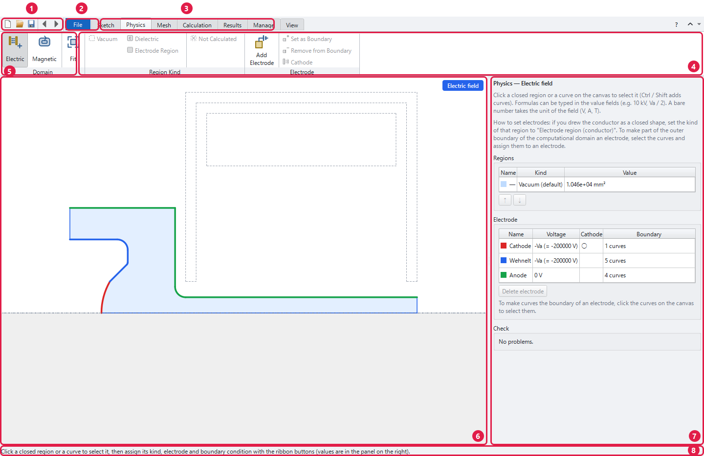
| No. | Name | Description |
|---|---|---|
| ① | Quick Access | New, Open, Save, Undo, Redo |
| ② | File | New, Open, Recent models, Save, Save As, Import, Export, Quit |
| ③ | Ribbon tabs | In order of work: Sketch / Physics / Mesh / Calculation / Results. To the right are Manage (parameters) and View. Switching tabs changes the screen to the one for that work |
| ④ | Ribbon panel | The operation buttons of the current tab. Move the mouse over a button to see its description. Buttons that cannot be pressed now are shown in a faint color |
| ⑤ | Domain | Selects which geometry, "Electric" or "Magnetic", is handled. It is at the left end of the Sketch, Physics and Mesh tabs. The "Fit" button next to it adjusts the view so that the current domain's geometry fits (F key) |
| ⑥ | Central canvas | The screen where you draw and select the geometry (canvas). The name of the current domain appears at the upper right (electric = blue, magnetic = green). In the Results tab, it is replaced by the result plots |
| ⑦ | Right panel | The setting fields of the current tab (Physics: table of regions and electrodes; Mesh: size and status; Calculation: convergence graph and settings; Results: list of results and display options). Not shown in the Sketch tab |
| ⑧ | Status bar | Guidance for the current operation, the state of the calculation, and the coordinates (z, r) of the mouse position |
To change the display language (Japanese / English), choose "File" → "Language...". It takes effect after you restart TGUN.
The "?" at the upper right has "Manual" (F1 key) and "About TGUN" (version, trial expiry, terms of use, and the licenses of the open-source software used). The "∧" to its right collapses the ribbon to the tab names only (press it again to restore).
The window title shows the name of the model. If there are unsaved changes, "*" is added after the name. For the trial version, the expiry date is also shown (for example, "Trial version (until 2027-12-31)").
Operating the central canvas
| Operation | Action |
|---|---|
| Mouse wheel | Zoom in and out, centered on the mouse position |
| Drag while holding the middle button (wheel) | Pan the view |
| F key (or "Fit") | Adjust the view so that the geometry of the current domain fits |
The geometry of the other domain is overlaid as gray dashed lines (you can hide it with "Other Domain" in the View tab).
The View tab and the Manage tab
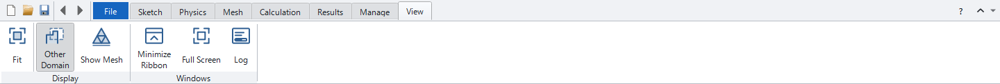
| Button | Description |
|---|---|
| Fit | Adjusts the view so that the geometry of the current domain (and the axis) fits (F key). In the Results tab, returns the result plot to the full view |
| Other Domain | Shows / hides the outline of the other domain (electric / magnetic) as gray dashed lines |
| Show Mesh | Overlays / hides the generated mesh on the geometry |
| Minimize Ribbon | Shows only the tab names in the ribbon (Ctrl+F1. Double-clicking a tab name does the same) |
| Full Screen | Makes the window fill the screen (F11) |
| Log | Shows / hides the log of mesh generation and calculation at the bottom of the screen |
The Manage tab has "Parameters" (the table of parameters, Section 5.5). The View and Manage tabs do not change the current work (sketch, physics, ...) when you open them.
4. Tutorial: calculating the example
This section walks you through opening the example gun_with_solenoid (a Pierce-type electron gun with a solenoid that has an iron yoke), generating the mesh, running the calculation, and viewing the results. One calculation takes about 15 seconds.
The structure of the example (r-z cross section, dimensions in mm):
Electric field Cathode (-200 kV) sphere. Radius 30, radius of curvature 60
Wehnelt (-200 kV) focusing electrode that opens at 45 degrees from the edge of the cathode
Anode (0 V) the plane at z = 70 and the beam pipe (radius 15, up to z = 300)
Magnetic field Coil (5000 A) z = 100 to 280, r = 140 to 190
Yoke (saturable material) iron of thickness 10 that surrounds the coil, z = 80 to 300
A beam of about 77 A leaves the cathode and passes through a beam pipe with a radius of 15 mm. Without the solenoid, half of the beam hits the wall of the pipe. With the solenoid, all of it passes through (compared in Section 4.8).
The geometry of this example is defined by dimensions and parameters. The cathode radius, the position of the anode, the accelerating voltage and the coil current are parameters, so changing one value changes the geometry or the conditions.
4.1 Opening the example
- Choose "File" → "Open" (Ctrl+O) at the upper left.
- Select
examples\gun_with_solenoid\gun_with_solenoid.tgunin the TGUN folder (the folder that containsTGUN.exe). In the development environment, this isTGUN_ver3\examples\gun_with_solenoid\gun_with_solenoid.tgun.
The geometry and the settings of the example open as they are. There is no mesh and no result yet; you create them below.
Tip: The file
gun_with_solenoid.tgunprojin the same folder is the input for the command line (Appendix B). It was made from this model, and you can pass it totgun run -pas it is.
4.2 Saving under a new name
Before you start the calculation, choose "File" → "Save as…" (Ctrl+Shift+S) and save the model under a different name
in your working folder (for example gun_tutorial.tgun). This leaves the original example folder unchanged.
Saving creates the model file gun_tutorial.tgun. The mesh and the results are stored in the data folder with the same
name, gun_tutorial.tgun.data (Chapter 11).
4.3 Viewing the geometry and parameters
On the Sketch tab, look at the geometry of the electric field. The filled light blue areas are the closed regions (the vacuum parts). The arc at the lower left is the cathode (a sphere), the slanted line rising from it is the Wehnelt electrode, the vertical line at z = 70 mm is the face of the anode, and the thin part extending to the right is the beam pipe. The bottom edge is the axis of symmetry (r = 0). The gray dashed lines are the outline of the magnetic geometry (the yoke and the coil).
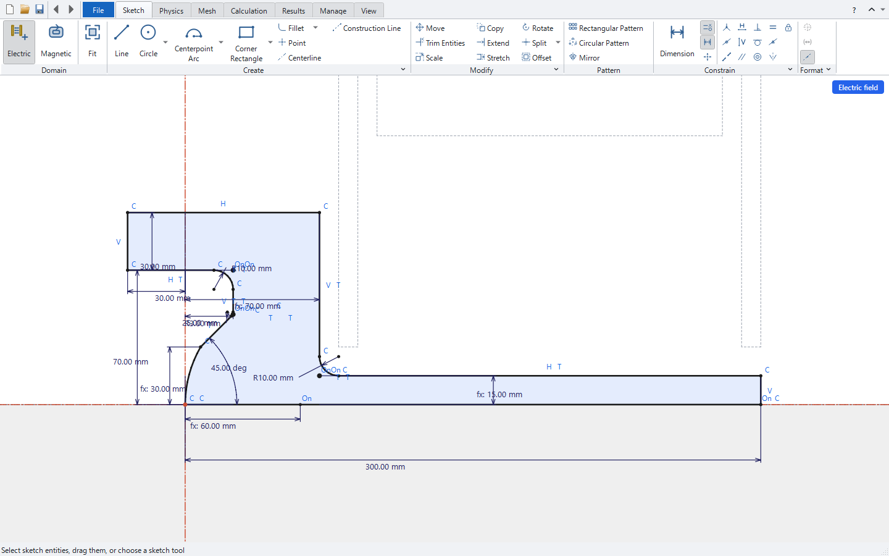
The numbers and arrows in the figure are dimensions. A dimension whose value is preceded by fx: is determined by an
expression (a parameter). Double-click a dimension to show its value or expression (such as Rc2 or d_an). If you change it,
the geometry follows (Section 5.4).
Click "Parameters" on the Manage tab to open the parameter table. The upper group in the table (Dimension Parameters) is for the dimensions in the sketch. Scroll down to find the group of user parameters that was made for this example.
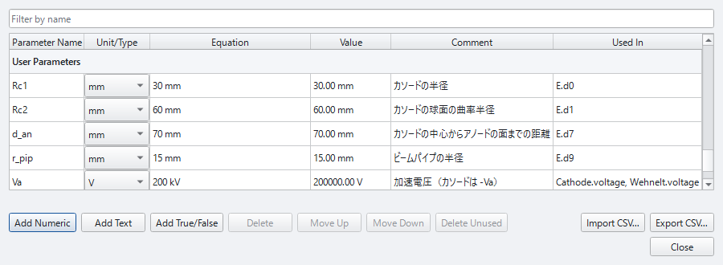
| Parameter | Value | Meaning |
|---|---|---|
Rc1 |
30 mm | Radius of the cathode |
Rc2 |
60 mm | Radius of curvature of the spherical cathode surface |
d_an |
70 mm | Distance from the center of the cathode to the face of the anode |
r_pip |
15 mm | Radius of the beam pipe |
Va |
200 kV | Accelerating voltage (the voltage of the cathode and the Wehnelt electrode is -Va) |
I_coil |
5000 A | Total current of the coil |
If you change an expression in the "Expression" column of the table, the dimensions, voltages and currents that use it change at once (Section 5.5). Here, just look at the table and close it.
Click "Magnetic Field" at the left end of the ribbon to switch to the magnetic geometry. The large outer rectangle is the air box, the U-shaped part inside is the yoke, and the square inside that is the coil. The gray dashed lines at the lower left are the outline of the electric geometry.
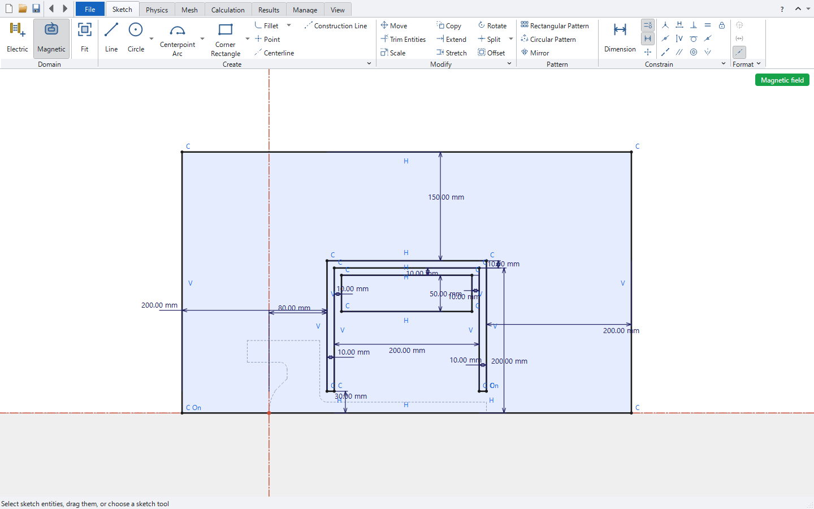
4.4 Viewing the physics settings
On the Physics tab, curves are drawn in the colors of their boundary and closed regions in the colors of their kind, and the panel on the right appears.
With the electric field (the domain set to "Electric Field"), the electrode table in the panel on the right lists Cathode
(the Cathode column is checked), Wehnelt and Anode. The voltage fields of Cathode and Wehnelt contain the expression -Va,
and the evaluated value (-200000 V) is shown. In the figure, the red line is the boundary of Cathode, the blue line is that of Wehnelt,
and the green line is that of Anode. The lines without a color (the short edge at the upper left and the edge at the right end) are
natural boundaries (∂V/∂n = 0). The bottom edge is the axis of symmetry.
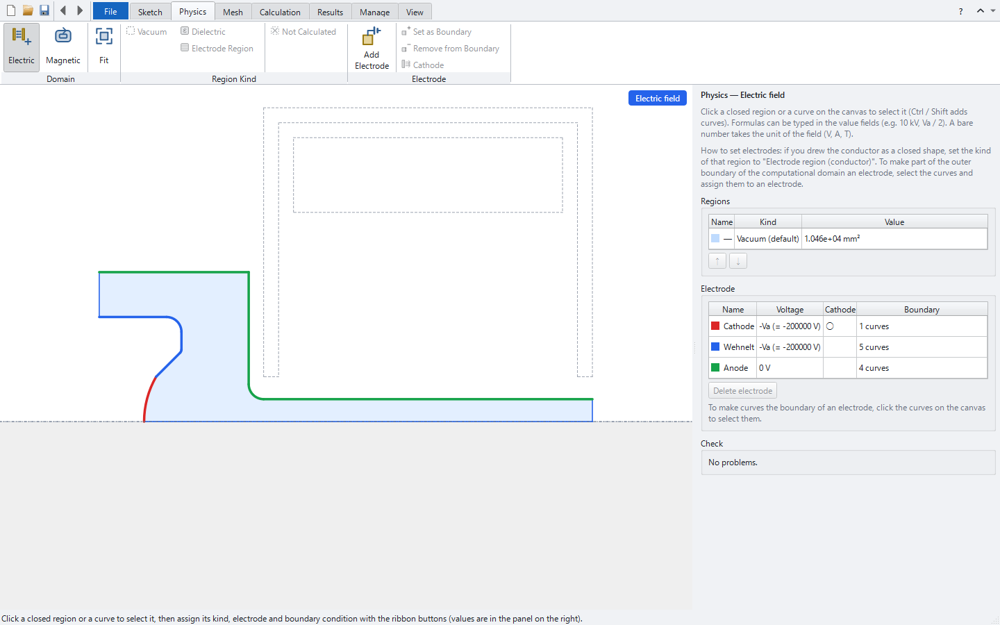
With the magnetic field (the domain set to "Magnetic Field"), the region table lists Coil and Yoke (Saturable material).
The total current field of Coil contains the parameter I_coil. The purple dashed line on the outer boundary is A = 0
(a boundary that magnetic flux does not cross). Click a row of the region table, or a closed region in the figure, to select it.
Then the fields for its kind, name and value appear below the table. The figure below shows the case where the coil is selected.
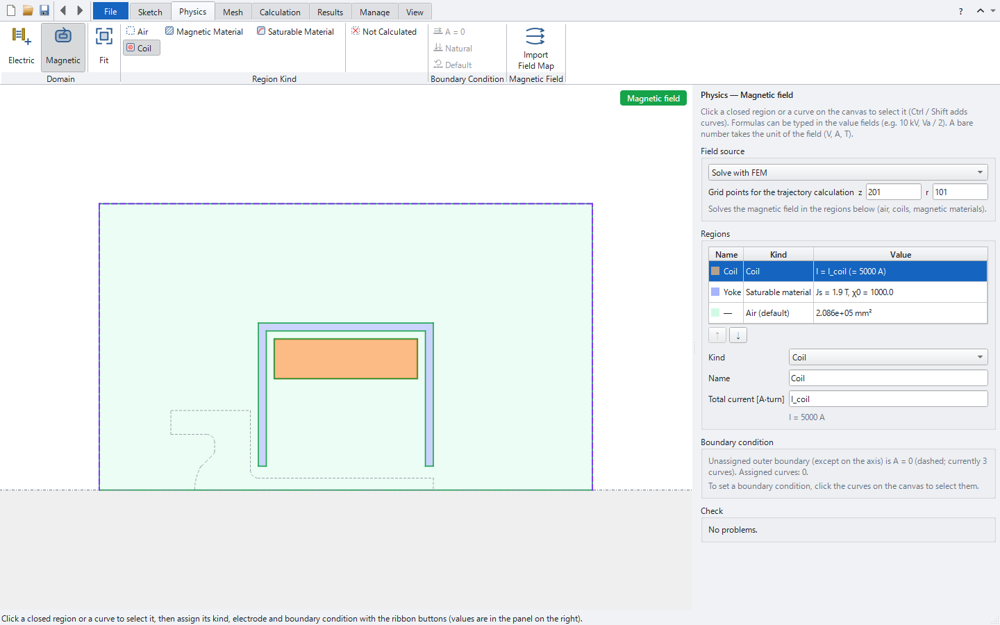
4.5 Generating the mesh
On the Mesh tab, click "Both Domains". The mesh (the fine triangular subdivision) is generated for the electric field first, then for the magnetic field. Click "Show Mesh" to overlay the mesh on the geometry. The panel on the right shows the numbers of nodes and elements and the edge lengths. The electric mesh is finer only near the cathode (overall 2 mm, near the cathode 1 mm; Chapter 7).
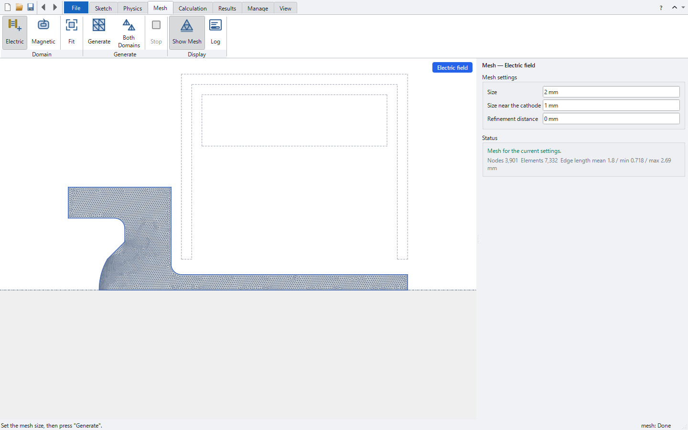
Switch the domain to the magnetic field to see the magnetic mesh.
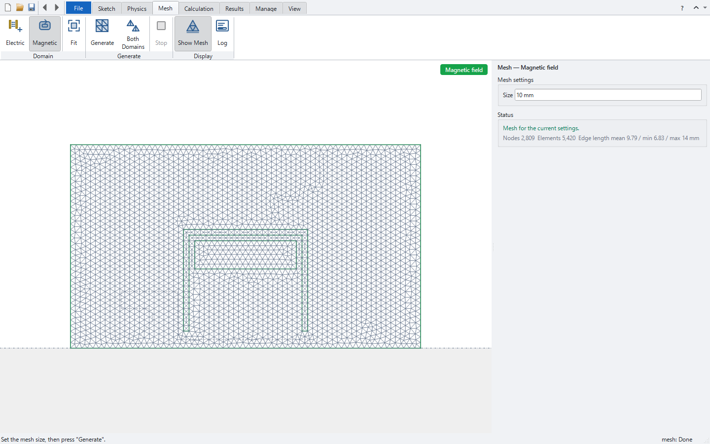
Tip: If you start the calculation without generating a mesh, the mesh is generated automatically before the calculation. Generating it on the Mesh tab first lets you check the fineness before you calculate. If the settings have not changed, the calculation uses that mesh as it is.
4.6 Running the calculation
On the Calculation tab, click "Run". A confirmation dialog appears. It lists the parameters, the calculation settings, the voltages of the electrodes, the currents of the coils, the mesh and the output folder of the results. Check them, then click "Run".
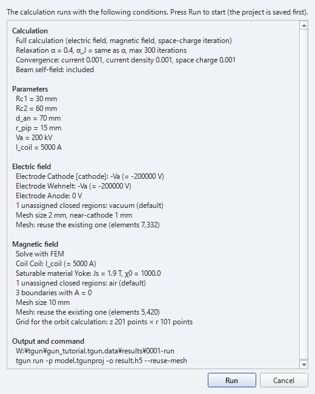
During the calculation, the convergence graph in the panel on the right extends with each iteration. Above it, "running: iteration k/max" and the current I_total at that moment are shown. Click "Log" on the ribbon to show the calculation log below the screen. To stop the calculation, click "Stop" (it stops at the next iteration boundary) or "Force Stop".
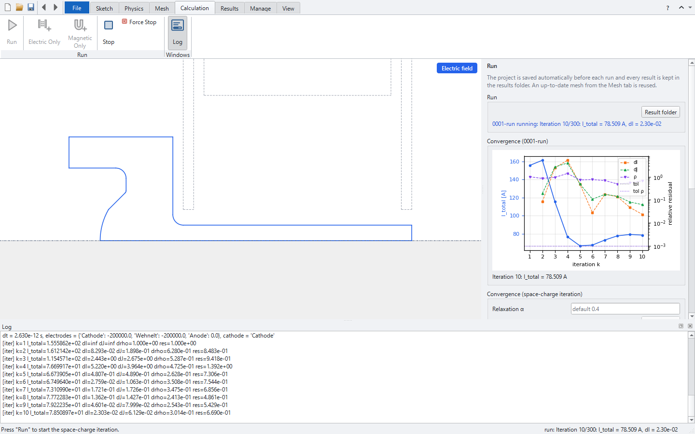
When the calculation finishes, the status becomes "Done (converged)". Below the graph, I_total, the perveance, the energy and the radius at the exit, and the calculation time are shown. In this example, the calculation converges in about 30 iterations, and the current is about 76.9 A (perveance 0.86 µP).
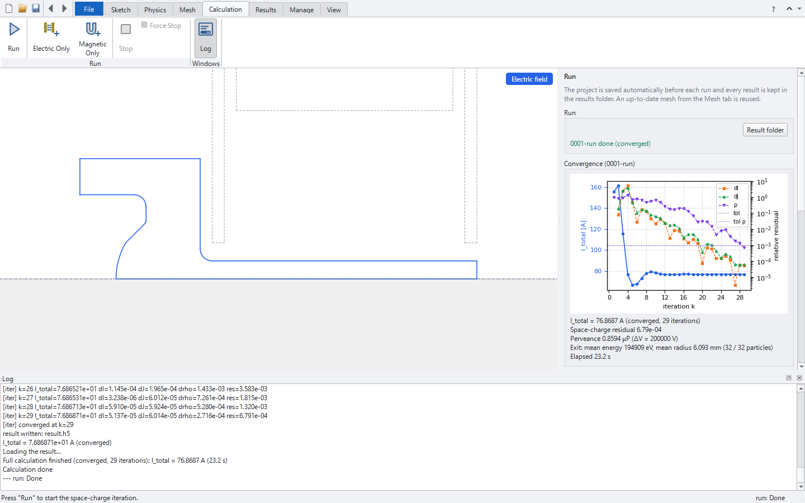
How to read the convergence graph:
- Blue line (left axis): beam current I_total [A]. It settles to a constant value as the iterations proceed.
- dI / dJ / ρ (right, logarithmic axis): relative residuals of the current, the emission current density and the space charge. dI and dJ are the differences between "the cathode current that the present field requires" and "the current used in the previous iteration". ρ is the difference between "the charge produced by the trajectories in the present field" and "the charge on which that field was based". The calculation has converged when dI and dJ are below the gray dotted line (tol), and ρ is below the purple dotted line (tol ρ).
- Vertical dashed lines: iterations at which the relaxation factor α was changed automatically. If the calculation is about to diverge, α is halved (the log shows "divergence detected"). After that, when ρ keeps decreasing, α is returned to its original value (the log shows "residual keeps decreasing").
4.7 Viewing the results
When you open the Results tab, the result list appears at the upper right and the result plot in the center. Click "0001-run Full run [Done]" in the list to show that result. At first, the distribution of the potential V is shown with the electron trajectories (blue) and the electrode shapes overlaid. The panel on the right shows a summary (current, perveance, the range of the fields and the peak of the on-axis magnetic field).
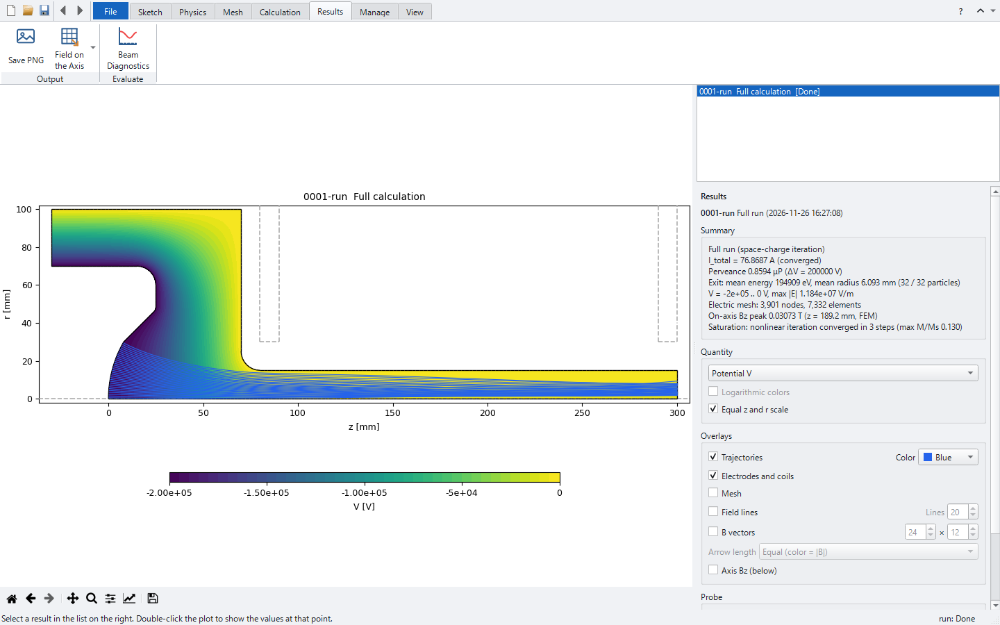
You can see the electrons leaving the cathode, focused toward the hole in the anode, and traveling through the beam pipe guided by the solenoid field. Switching the displayed quantity (electric field, space charge density, magnetic field) and the probes are described in Chapter 9.
4.8 Changing conditions and comparing
Calculation results are kept as a history and are not overwritten. Change a parameter, calculate again, and compare. Here, set the coil current to 0 and calculate the case without the solenoid.
- On the Manage tab, click "Parameters" to open the parameter table. Change the expression of
I_coilto0 Aand press Enter. - On the Calculation tab, click "Run". The confirmation dialog shows "All coil currents are 0, so the calculation runs without a magnetic field". Run it as it is. The result "0002-run" is created.
- On the Results tab, select the result. Use "Rename…" under the panel on the right to give it a clear name (for example, "Coil 5000 A" or "Coil 0 A").
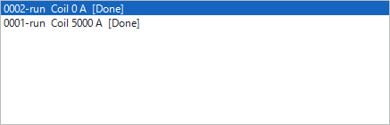
Click a result in the list to switch the display. Without the solenoid, the beam spreads under its own space charge, and the outer electrons hit the wall of the beam pipe (only about half of the emitted current reaches the exit).
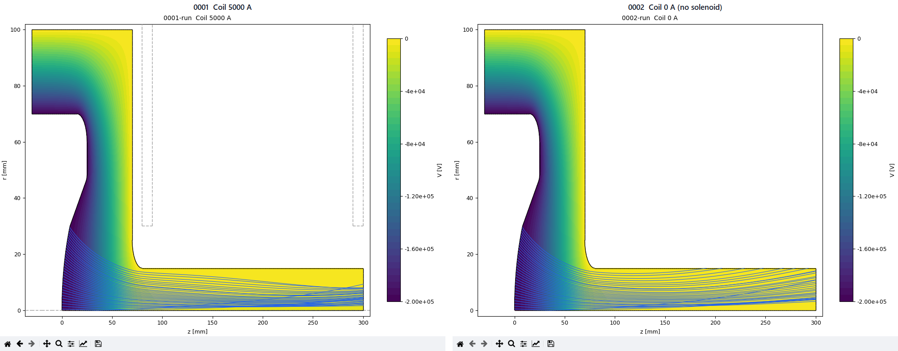
When you have finished comparing, set I_coil back to 5000 A.
Tip: In the same way, you can change
d_an(the position of the anode) orVa(the accelerating voltage) and compare how the current changes. The results record the parameter values used in the calculation (see the summary on the Results tab). To vary parameters from the command line and calculate automatically, see Section B.8 and Section B.9 in Appendix B.
This completes the tutorial. The following chapters explain in detail how to model and calculate your own electron gun.
5. Drawing the geometry (sketch)
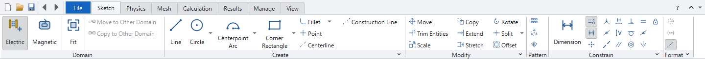
On the Sketch tab, you draw the geometry of the current domain (electric field or magnetic field). Before you draw, check which domain you are drawing for in the Domain box at the left end. The drawing, constraint and dimension tools are the same as the sketcher in the 3D CAD EMRM-CAD (close to the operation of Autodesk Inventor).
- Create: draws lines, circles, arcs, rectangles and so on.
- Modify: moves, trims, extends, copies and so on the drawn geometry.
- Pattern: copies in arrays, or mirror images.
- Constraints: dimensions and relations between entities (horizontal, parallel, coincident and so on).
- Format: switches to construction lines (auxiliary lines) and so on.
5.1 Basics of drawing
- On the Create panel, select a tool (buttons with ▼ open a list of related tools). The status bar shows the next step.
- Click on the screen to set the points in order. If you click near an existing point or line, the cursor snaps to an endpoint, a midpoint, or a point on a line.
- When a shape is finished, you can draw the next shape right away. Press Esc to finish the tool.
| Tool | How to use |
|---|---|
| Line (L key) | Click the start point, then the next point, and so on (connected lines). Double-click or press Enter to finish. Clicking the first point to close the loop also finishes |
| Circle ▼ | Center, then a point on the circumference. ▼ has Three Point Circle and Tangent Circle |
| Centerpoint Arc ▼ | Center, start point, end point. ▼ has Three Point Arc and Tangent Arc (an arc that joins smoothly to the end of a line) |
| Corner Rectangle ▼ | Two opposite corners. Horizontal and vertical constraints are added to the four sides. ▼ has Three Point Rectangle, Slot, Polygon and so on |
| Fillet ▼ | Rounds the corner between lines (enter the radius, then click the corner or the two lines). ▼ has Chamfer |
| Point | Places a point |
| Construction Line / Centerline | Auxiliary line (dashed). It does not form the outline of a closed region |
While drawing, the input window appears at the top left of the screen. Instead of positioning with the mouse, you can type numbers to set the shape. The figure below shows the state after the first point of a line is placed. There are fields for length and angle.
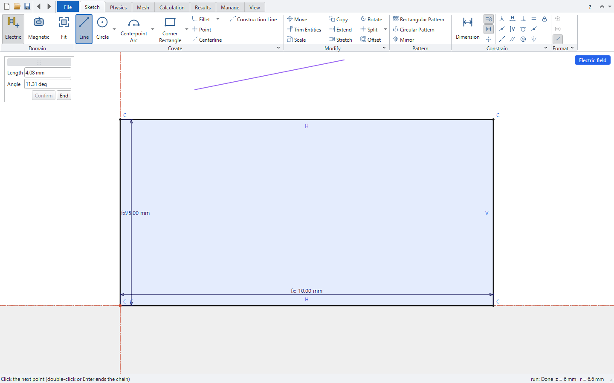
- Press Tab to move to the next field, type a value, and press Enter to confirm. The typed values remain as dimensions.
- You can also type expressions in the fields (
25 mm,40 + 2 * 5, or a parameter name such asLgap). - If you draw a line that is nearly horizontal or vertical, a horizontal or vertical constraint is added automatically. If you snap an endpoint to an existing point, a Coincident constraint connects them. Hold Ctrl and click to draw without adding a constraint at that click.
Note: The curves that can be used in the calculation are lines, circles and arcs. Splines, ellipses and text cannot be used (there are no buttons for them).
5.2 Closed regions (the range to be calculated)
A region enclosed by lines is found automatically and shaded in light blue. This is a closed region, the unit of the range to be calculated. If a region is not shaded, its outline is not closed (see Chapter 12).
- Lines must be joined by matching endpoints. Endpoints that are not joined are shown as large orange dots.
- Even where lines cross, the curves are not cut. The regions separated by the crossing become separate closed regions. For example, if you draw a square coil inside an air box, the inside and the outside of the coil become separate closed regions.
- Draw the top edge on the axis of symmetry too. Points on the axis are automatically given a constraint that keeps them on the axis. Do not let the geometry extend to r < 0 (the check reports this as an error).
5.3 Constraints
A constraint defines a relation between entities and keeps the shape. Add constraints with the icons on the Constraints panel (hover over an icon to see its name).
| Constraint | Symbol on screen | Meaning |
|---|---|---|
| Coincident | C | Makes two points coincide (can also be applied to the origin) |
| Point on Object | On | Places a point on a line, circle, arc or axis |
| Collinear | ≡ | Places two lines on the same straight line |
| Horizontal / Vertical | H / V | Makes a line (or two points) horizontal / vertical |
| Parallel / Perpendicular | // / ⊥ | Makes two lines parallel / perpendicular |
| Tangent | T | Makes a line tangent to a circle or arc, or circles and arcs tangent to each other |
| Concentric | ◎ | Makes the centers of two circles or arcs coincide |
| Equal | = | Makes the lengths of two lines equal, or the radii of two circles or arcs equal |
| Midpoint | M | Places a point at the midpoint of a line or an arc |
| Symmetric | ][ | Makes two points, lines, circles or arcs symmetric about a line |
| Fix | F | Fixes a point or an entity at its current position |
There are two ways to apply a constraint.
- Select the entities first (Ctrl-click to add more), then press the constraint button.
- Press the constraint button first, then click the entities one at a time. The constraint is applied when the required number of entities is reached. Press Esc to finish.
The color of the lines shows how far the shape is defined. Thin blue lines can still move (dimensions or constraints are missing), thick black lines are fully defined, and red lines have too many constraints or conflict. If you try to add a constraint that conflicts with an existing one, a conflict dialog appears and the shape does not change.
5.4 Dimensions
A dimension is a constraint that defines the shape by values such as length, angle and radius.
- Press Dimension (D key).
- Click the line, circle or point to dimension (when two items are needed, click them in order).
- Click where to place the dimension. The input window appears. Type the value (expressions are allowed) and press Enter.
| What you select | Dimension created |
|---|---|
| One line, or two points | Length (the placement position makes it horizontal or vertical) |
| A point and a line | Distance from the point to the line |
| Two lines | Angle (distance for parallel lines) |
| Circle / arc | Diameter / radius |
| Origin and a point | Horizontal or vertical distance (coordinates) |
- To change the value of a dimension, double-click the dimension number on the screen.
- If you enter a parameter name or an expression as the value,
fx:is added to the dimension text and the dimension follows the parameter. - If you check "Driven (reference)" in the input window, the dimension only measures the current value without defining the shape (it is shown in parentheses).
Example: a planar diode (width Lgap = 10 mm, height Rc = 5 mm) with its shape defined by parameters and dimensions. The lower-left corner is coincident with the origin, and the lines are black, so the shape is fully defined.
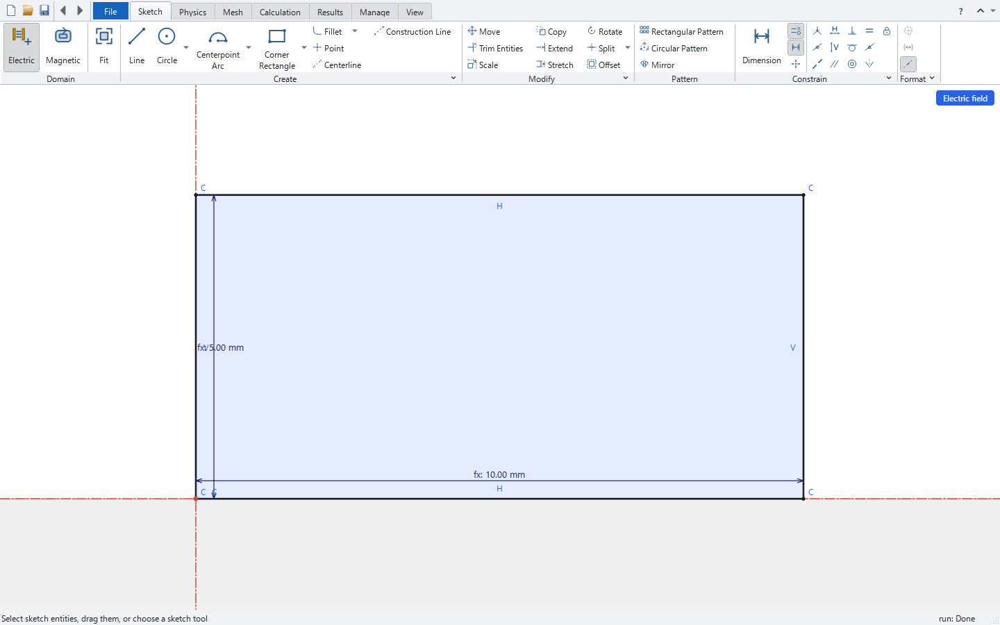
5.5 Parameters and expressions
On the Manage tab, click "Parameters" to open the parameter table. (It can be opened from any tab, and you can keep it open while you work.)
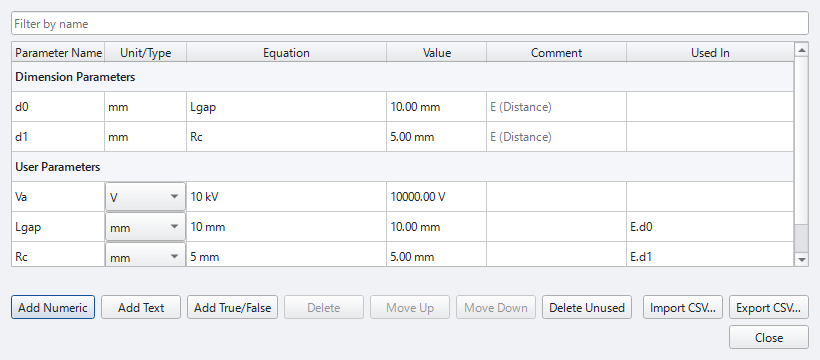
- User Parameters: parameters you create. Click "Add Numeric" to add a row, then enter the name, unit and expression.
- Dimension Parameters: the dimensions of the sketch (names such as d0, d1 are assigned automatically). You can link them to other parameters in the expression field.
- Parameters can be used in dimensions, and in fields such as the electrode voltage, the coil current, the relative permittivity and the mesh size. They are shared by the electric and magnetic fields.
- When you change a parameter, all shapes and values that use it follow.
How to write expressions
| Form | Example |
|---|---|
| Number with a unit | 10 mm, 10 kV, 30 deg, 2.15 T, 1000 A |
| Calculation | Lgap / 2, 2 * Rc + 1 mm, sqrt(2) * Rc |
| Functions | sin, cos, tan (angles are in degrees: sin(30 deg) and sin(30) both give 0.5), sqrt, abs, min, max and so on |
Rules for units
- If you type only a number in a value field (voltage, current, mesh size and so on), the unit of that field is added. For example,
10000in the voltage field becomes10000 V. - Create parameters with units (for a voltage,
Va = 10 kV). If you enter a parameter without a unit in a field such as voltage, it is an error. It is not silently treated as V. To fix it, add a unit to the parameter, or write the field asVn * 1 V. - For a field where you write an expression, the evaluated value (for example
= 10000 V) is shown below it.
5.6 Selecting, moving and deleting
| Operation | Result |
|---|---|
| Click | Selects one point, curve, constraint symbol or dimension. Ctrl toggles the selection, and Shift adds to it |
| Drag from empty space left to right | Selects the entities that lie completely inside the box |
| Drag from empty space right to left | Selects the entities that touch the box |
| Drag a selected point or curve | Moves it while keeping its constraints |
| Delete | Deletes the selected entities, constraints and dimensions |
The Modify panel has Move, Copy, Rotate, Trim (T key, removes the excess up to the intersection), Extend, Split, Scale, Stretch and Offset. The Pattern panel has rectangular and circular patterns, and Mirror. To make a line an auxiliary line, select it and press "Construction" on the Format panel. Press it again to change it back.
If you make a mistake, use "Undo" (Ctrl+Z). To redo, press Ctrl+Y.
5.7 Drawing the magnetic geometry
Set the domain to magnetic, then draw the air box (outer boundary), the coils and the magnetic materials.
- Make the air box large enough to enclose the coils and magnetic materials, so that the magnetic field becomes small at the outer boundary. Start drawing from the axis (r = 0).
- The electric-field geometry is shown overlaid as gray dashed lines. Use it as a guide when you place the coils relative to the electrodes.
- Make sure the region where the electrons travel (the electric-field geometry) lies inside the magnetic-field geometry.
- If you make dimensions and parameters shared with the electric field (for example, decide the coil position with a parameter for the electrode position), the other side follows when you change one of them.
If you drew in the wrong domain (moving to the other domain)
If you drew the magnetic geometry in the electric sketch by mistake, you can move it without drawing it again.
- Select the curves and points to move (drag a box to select several at once).
- Click "Move to Other Domain" in the "Domain" panel of the Sketch tab. The selected geometry moves to the same position in the sketch of the other domain (magnetic if you are in electric, and vice versa). To keep the original, click "Copy to Other Domain".
- The constraints and dimensions move with it, including dimensions from the origin or the axes and expressions that use parameters (
Rc1,W / 2, ...). - Constraints and dimensions between the selection and unselected curves are dropped (the status bar shows how many). An expression that refers to another dimension is replaced by its current value.
- Electrode and boundary-condition assignments of the moved curves are removed. Assign them again on the Physics tab in the other domain.
- One "Undo" (Ctrl+Z) restores the state before the move.
Tip: The ordinary cut, copy and paste (Ctrl+X, Ctrl+C, Ctrl+V) also work across the two domains. However, they drop the constraints and dimensions attached to the origin and the axes, and turn dimension expressions into numbers (so that the geometry can also be pasted into another model).
6. Specifying the physics
On the Physics tab, you assign a kind (vacuum, coil, etc.) to closed regions, and electrodes and boundary conditions to curves. The operations are done with the ribbon buttons, and the values (voltage, current, etc.) are entered in the fields of the panel on the right.
- Selecting a closed region: click a place inside a closed region where there is no curve (you can also select it by clicking its row in the region table on the right panel).
- Selecting a curve: click the curve (hold Ctrl or Shift to select several).
- On the Physics tab, the geometry cannot be moved. To change it, go back to the Sketch tab.
6.1 Electric field: region kinds
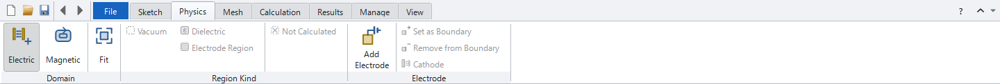
When you select a closed region, the "Region Kind" buttons on the ribbon become available, and the button for the current kind is shown as pressed.
| Kind | Description |
|---|---|
| Vacuum | The range in which electrons travel (εr = 1). A closed region with no kind assigned is vacuum (shown as "vacuum (default)" in the table) |
| Dielectric | Insulator (such as an insulator bushing). Enter the relative permittivity εr in the panel on the right |
| Electrode Region | Conductor body (such as a Wehnelt or an electrode body). It is removed from the computational domain (mesh), and the curves of its outline become the boundary of that electrode. Select which electrode it is in the panel on the right (you can create a new one with "+ New electrode") |
| Not Calculated | Removes the region from the computational domain (for a closed region that is neither an electrode nor used) |
6.2 Electric field: setting the electrodes
There are two ways to set electrodes. You can combine them.
- When the conductor is drawn as a closed shape: set that closed region as an "Electrode Region" (Section 6.1). The whole outline becomes that electrode.
- When only part of the outer boundary of the computational domain is an electrode: select the curves and make them the boundary of the electrode (steps below).
Making a curve the boundary of an electrode
- Select the curve you want to make an electrode (for example, the line of the cathode surface).
- Press "Add Electrode" on the ribbon. A new electrode is created, and the selected curve becomes its boundary. To add the curve to an existing electrode, select that electrode's row in the table on the right and then press "Set as Boundary".
- In the fields below the table on the right panel, enter the name and the voltage (a number or an expression, for example
10 kV,Va,Va / 2). - For the electrode that emits electrons, select it in the table and press "Cathode" (the check box on the right panel does the same).
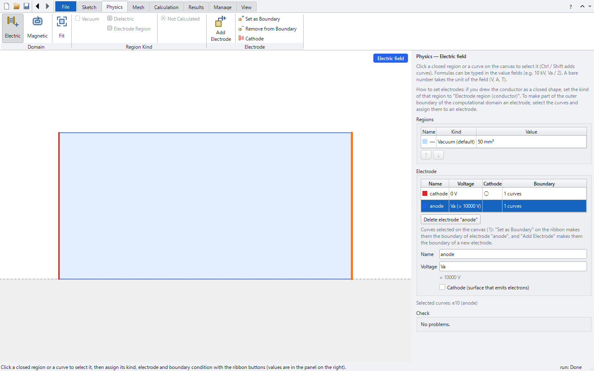
| Button | Description |
|---|---|
| Add Electrode | Adds one electrode. If curves are selected, they become the boundary of that electrode |
| Set as Boundary | Makes the selected curves the boundary of the electrode selected in the table on the right (they are removed from any other electrode) |
| Remove from Boundary | Removes the selected curves from the boundary of an electrode |
| Cathode | Sets the electrode selected in the table on the right as the cathode, or clears it |
- There is exactly one cathode. If another electrode is made the cathode, the previous cathode is cleared.
- In the "boundary" column of the electrode table, the boundary of each electrode is shown (for example, "region 1, 2 curves"). The curves in the figure are drawn in the color of their electrode.
- You can also make only part of the outline of an electrode region a different electrode (for example, the cathode surface). A curve that is assigned directly takes priority.
- To delete an electrode, select it in the table and press its "Delete electrode" button (the button shows the electrode's name).
- Outer curves that are not made electrodes are natural boundaries (∂V/∂n = 0). The axis of symmetry is the same.
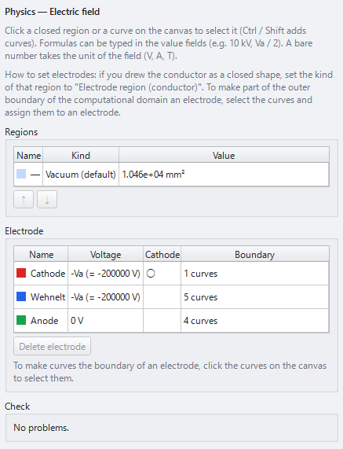
6.3 Magnetic field: field source
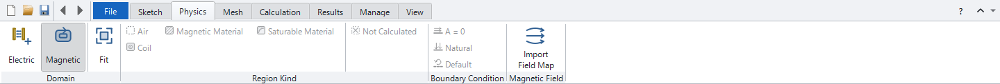
At the top of the panel on the right, choose how the magnetic field is given.
| Source | Description |
|---|---|
| Solve with FEM | Calculates the magnetic field from the coils and magnetic materials drawn in the magnetic geometry. "Grid points for the trajectory calculation" below it is the number of divisions (z × r) of the magnetic field map used to trace electrons |
| Import magnetic field map | Uses an imported magnetic field map (Section 10.3) |
| None | Calculates without a magnetic field |
When "Import magnetic field map" or "None" is selected, the magnetic geometry (regions and boundary conditions) is not used in the calculation.
6.4 Magnetic field: coils, magnetic materials and boundary conditions
Select a closed region, press its kind button on the ribbon, and enter the values in the panel on the right.
| Kind | Value |
|---|---|
| Air | μr = 1, current 0 (A closed region with no kind assigned is air. In the table it is shown as "air (default)") |
| Coil | Total current [A·turn] (number of turns × current). Expressions can also be used |
| Magnetic Material | Relative permeability μr (constant) |
| Saturable Material | Saturation magnetization Js [T] and initial susceptibility χ0 (Section 6.6) |
| Not Calculated | Removes the region from the computational domain |
Coil OFF: If the current of a coil is set to 0, that coil creates no magnetic field. When all coil currents are 0, the magnetic field is 0 (magnetic materials are not magnetized either), so the full calculation is run without a magnetic field. The panel on the right and the check before running show this. In this case, "Magnetic Only" calculations and the magnetic field mesh are not made, since there is no magnetic field to compute.
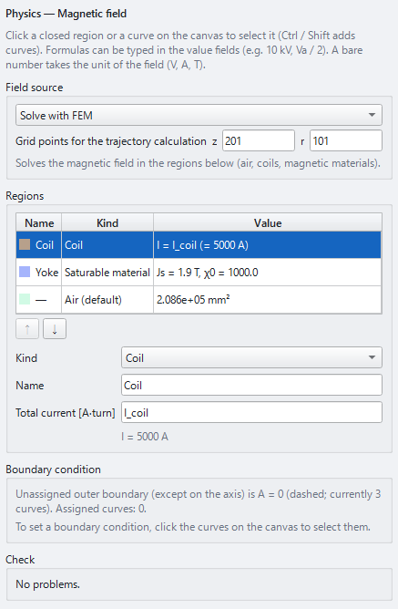
Boundary conditions (select curves, then use the ribbon buttons)
| Button | Description |
|---|---|
| A = 0 | Magnetic flux does not cross the line. Use it for the outer boundary of an air box |
| Natural | Magnetic flux enters and leaves the line perpendicularly (for example, a plane of symmetry) |
| Default | Removes the setting |
If nothing is specified, the outer boundary except on the axis is A = 0 (dashed in the figure). Usually you do not need to specify boundary conditions.
6.5 Region table and checks
- Reordering: select a row in the region table and move it up or down with ↑ ↓ below the table. This is used, for example, to line up coils in order. It changes only the display order and does not affect the calculation (the check before running uses the same order).
- Name: when a region is selected, you can give it a name in the field below the table.
- Check: the result of checking the current geometry and physics settings is always shown at the bottom of the panel on the right. If there are no problems, it shows "No problems." The main items are:
- Electric field: no cathode, or two or more cathodes; an electrode region with no electrode selected
- Magnetic field: all coil currents are 0 (the full calculation runs without a magnetic field)
- Common: no computational domain; geometry that protrudes below the axis (r < 0); an assigned closed region that is not found (after the shape was changed. Assign it again)
6.6 Saturation of magnetic materials (Fröhlich–Kennelly model)
In regions where the magnetic field is strong, the magnetization of a magnetic material (such as iron) saturates and its permeability drops. A closed region whose kind is set to "Saturable Material" is calculated with this saturation using the Fröhlich–Kennelly model.
M = χ0 H / (1 + χ0 H / Ms) B = μ0 (H + M) Js = μ0 Ms
- Saturation magnetization Js [T]: how large the magnetization can become (the upper limit of μ0M in a strong field). About 2.15 T for pure iron, and about 2.35 T for permendur (FeCo).
- Initial susceptibility χ0: how easily the material magnetizes in a weak field (dM/dH at the origin). The initial relative permeability is 1 + χ0.
- H = Ms/χ0 gives exactly half saturation (M = Ms/2). This is the guide to the "knee". In a strong field, B ≈ μ0 H + Js, and beyond that B increases only with the same slope μ0 as vacuum.
Entering the values
- Select a closed region in the magnetic field, and press "Saturable Material" on the ribbon.
- Enter the values of "Saturation magnetization Js" and "Initial susceptibility χ0" in the panel on the right (a number or a parameter expression).
- The B–H curve for the values you entered appears below. The red dot is the guide to the knee, and the dashed line is Js. The H axis is on a logarithmic scale (turn off "Show the H axis on a log scale" to get a linear scale). Compare the curve with a catalog or measured B–H curve to check that the values are reasonable.
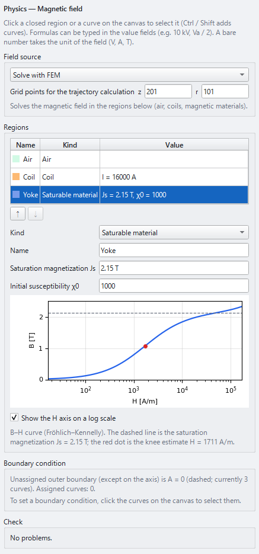
Fitting the values from a B–H curve (Kennelly plot)
In this model, H / M is a linear function of H (H / M = 1/χ0 + H/Ms). From a measured B–H curve, compute M = B/μ0 − H, plot H on the horizontal axis and H/M on the vertical axis, and draw a straight line through the points. Then:
- The slope of the line = 1/Ms (Js = μ0 / slope)
- The intercept on the vertical axis = 1/χ0
It is practical to fit using the points from the knee into the saturation range. The knee of this model is smoother than that of real iron, and the model cannot represent the rise at low fields (where the initial permeability is smaller than the maximum permeability). χ0 is the slope at the origin of the model, and it may not match the initial permeability of the material.
Calculation
With a saturable magnetic material, the magnetic field calculation becomes a nonlinear iteration (Newton's method). It usually converges in a few to about ten iterations, and the time increases by only a few seconds. The log shows a line for each iteration ([b-nl] k=1 res=… step=… dA=… sat_max=…, where res is the residual and sat_max is the maximum saturation ratio), and at the end, "Nonlinear magnetic field calculation: converged in N iterations". If it does not converge, a warning is shown and the calculation continues with the last solution (the result summary also shows this. See Chapter 12).
Reading the results
The displayed quantities on the Results tab include "Saturation ratio M/Ms" and "Effective relative permeability μr" (only for results that contain a saturable magnetic material). Both are values per element, and they are colored element by element. The saturation ratio is shown in colors from 0 (not saturated) to 1 (fully saturated). The summary shows "Magnetic material saturation: converged in N nonlinear iterations (maximum saturation ratio …)". In a probe (double-click), the μr,eff, M/Ms and |H| at a point inside a magnetic material are also shown.
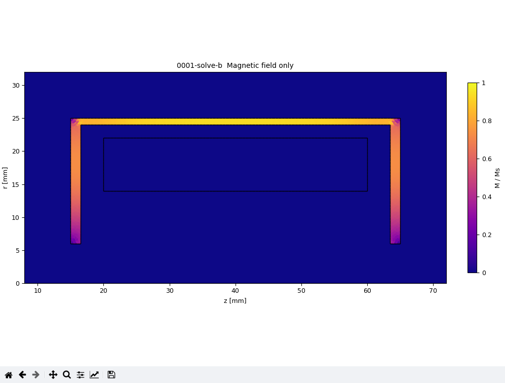
Notes
- Mesh around magnetic materials: outside a magnetic material, in a region with no magnetic field that encloses the flux, the error from a coarse mesh is amplified by the relative permeability of the material (for an iron core with μr = 1000, a 0.5 mm mesh gives an error of several percent). When you use magnetic materials, make the magnetic field mesh smaller and check that the results do not change. Saturation lowers the effective relative permeability, so this error also becomes smaller.
- Saturation occurs locally, for example at the tip of a pole piece. If that part is thin, make the mesh fine enough for its thickness.
- Hysteresis (magnetization history), remanent magnetization (permanent magnets) and anisotropy are not treated.
Trying it with an example (example solenoid_yoke. In the distributed version, it is in examples\solenoid_yoke in the TGUN folder)
This is a magnetic-field-only example: a coil surrounded by a thin magnetic yoke (an outer tube, and plates at both ends that extend close to the axis).
- Open
solenoid_yoke.tgunwith "File" → "Open", and save it under a new name in your working folder (the same as Section 4.2). - On the Physics tab, set the domain to magnetic and select the closed region of the yoke. Js = 2.15 T and χ0 = 1000 are shown, together with the B–H curve.
- Calculate with "Magnetic Only" on the Calculation tab (a few seconds). Lines for the nonlinear iterations appear in the log, and it converges in about 8 iterations.
- On the Results tab, set the displayed quantity to "Saturation ratio M/Ms". You can see that the two end plates and the outer tube of the yoke are saturated to about 0.6 to 0.9.
The maximum of Bz on the axis is about 0.431 T. If you change the yoke's kind to "Magnetic Material" (constant μr = 1000) and calculate again, it becomes about 0.45 T. This shows that ignoring saturation overestimates the magnetic field by about 5%. If the coil current is lowered from 16000 to 4000 A, the yoke barely saturates, and the magnetic field becomes almost proportional to the current.
7. Generating the mesh
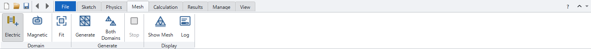
The calculation divides the computational domain into fine triangles (the mesh). On the Mesh tab, you can generate the mesh before the calculation and check its fineness and size (number of elements). Settings are made for each domain (electric / magnetic).
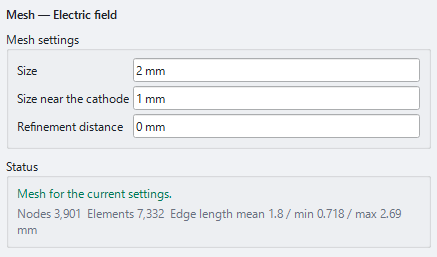
| Item | Description |
|---|---|
| Size | Approximate length of the triangle edges (for example 0.5 mm). A number or an expression. A smaller value raises the accuracy, but the calculation becomes slower |
| Size near the cathode (electric field) | Makes the mesh fine only near the cathode curves, down to this size (0 mm = not used). This greatly improves the accuracy of the emission current (for a planar diode, the error goes from +2.4% to +1.4%) |
| Refinement distance (electric field) | Makes the mesh fine up to this distance from the cathode (0 mm = automatic, 10 times the size near the cathode) |
A value entered in a field takes effect when you press Enter or move to another field. Even if you enter a value and press a ribbon button such as "Generate" without pressing Enter, generation starts after that value has taken effect.
Fields for the mesh with the cathode-area refinement (example of a DGUN import):
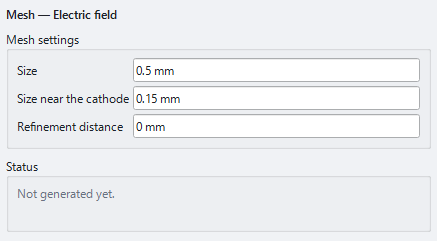
| Button | Description |
|---|---|
| Generate | Generates the mesh of the current domain |
| Both Domains | Generates the electric and magnetic meshes one after the other |
| Stop | Stops the generation (available only while generating) |
| Show Mesh | Overlays the generated mesh on the geometry, or hides it |
| Log | Shows the log of mesh generation at the bottom of the screen |
If a model has never been saved, you are first asked where to save it (the mesh is stored in the data folder next to the model).
The "State" section of the panel on the right shows the state and statistics of the mesh (number of nodes and elements, and the mean, minimum and maximum edge length).
- "Mesh for the current settings.": the mesh matches the current geometry and settings. The calculation uses it as it is (it is not regenerated).
- When the geometry, regions, boundaries or mesh settings are changed, a message says that the mesh must be regenerated (it is generated automatically when a calculation starts). If you have only changed an electrode voltage or a coil current, no regeneration is needed.
- "All coil currents are 0, so no magnetic field mesh is needed.": coil OFF (Section 6.4).
- "The magnetic field is not solved with FEM in this setting, so no magnetic field mesh is needed.": the field source is "None" or "Import magnetic field map".
Tip: It is efficient to look at the overall picture first with a coarse mesh (for example 0.5 mm), and to refine near the cathode as needed. After making the mesh finer, also reduce the relaxation factor α (Section 8.3).
Note: Around magnetic materials (materials with a large μr), the error from the coarseness of the magnetic field mesh has a large effect. Make the magnetic field mesh size smaller and check that the results do not change (see the note in Section 6.6).
8. Running the calculation
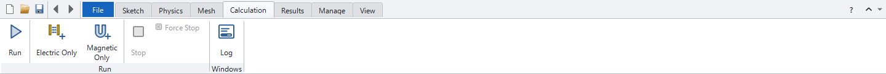
8.1 Types of calculation
| Button | Description |
|---|---|
| Run | Full calculation. Computes everything from the magnetic field through the space-charge iteration (emission and tracking). This is the one to normally use |
| Electric Only | Solves only the electric field without space charge (Laplace equation). Use it to check the electrode layout and the electric field |
| Magnetic Only | Solves only the magnetic field (coils and magnetic materials) and builds a magnetic field map. Use it to check the coil layout or the saturation of magnetic materials |
| Stop | Stops at the next iteration boundary (available only during a calculation; the results are not saved) |
| Force Stop | Ends the calculation process immediately (the results are not saved) |
| Log | Shows or hides the calculation log at the bottom of the screen |
When you press a calculation button, a confirmation appears before the run (Section 4.6). If the model has never been saved, you are first asked where to save it. The confirmation lists the parameter values, the electrode voltages, the coil currents, the calculation settings, the mesh (whether to reuse the current one or to make a new one), and the output folder and command. Pressing "Run" saves the model automatically and then starts the calculation. The calculation runs in a separate process, so the window does not freeze during the calculation, and you can still view earlier results.
If the physics settings contain an error, the calculation does not start and the reason is shown (Chapter 12).
8.2 During and after the calculation
The panel on the right shows the state, the convergence graph and the summary (see Section 4.6). When the calculation ends, a new result is added to the list in the Results tab.
- A result that reached the maximum number of iterations without converging is marked "not converged" in the summary.
- Use "Result folder" in the panel on the right to open the result folder (result.h5, log.txt, etc.).
- If there is a saturable magnetic material, the log shows the lines of the nonlinear iteration (
[b-nl] …) during the first magnetic field calculation (Section 6.6). The convergence graph shows the space-charge iteration only.
8.3 Calculation settings
You can change the calculation settings at the bottom of the panel on the right. A blank field uses the default value (shown in light text as "default …"). Type a value and press Enter to apply it; leave the field empty to return to the default. The settings are saved in the model.
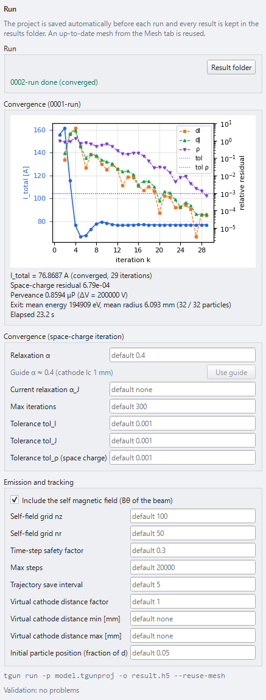
Convergence settings (space-charge iteration)
| Item | Description |
|---|---|
| Relaxation α | How much of the new space-charge density ρ replaces the old value at each iteration (0 < α ≤ 1). A smaller value is more stable but converges more slowly. Use a smaller value for a finer mesh |
| Guide α ≈ … / Use guide | Guide value of α computed from the mesh size (or from the size near the cathode, if the cathode region is refined). "Use guide" enters it as α |
| Current relaxation α_J | Relaxation factor for the emission current density J (blank = same as α) |
| Max iterations | Upper limit of the iterations (default 300). When it is reached, the result is saved even if it has not converged |
| Tolerance tol_I / tol_J | Residual tolerances for the current I and the emission current density J (default 0.001) |
| Tolerance tol_ρ (space charge) | Residual tolerance for the space charge (default 0.001). The calculation is converged when the residuals of I, J and ρ are all below their thresholds. Set 0 to leave ρ out of the check |
The cathode currents (I and J) settle quickly, but the beam in the drift tube keeps changing for a while after that. tol_ρ is the check for this. With 0, the iteration stops on I and J alone and is shorter, but the beam shape in the drift tube (such as the wavelength of the ripples) may not be converged. In this case the summary shows "Space-charge residual … (large)". Example: in the DGUN example test3 (400 mm drift tube), with tol_ρ = 0 the iteration stops after 16 to 29 iterations and the ripple wavelength is off by 3 to 17%. With tol_ρ = 0.001 it converges after 39 iterations, and the wavelength agrees with the theoretical value within 0.3%.
Guide values for α: mesh 0.5 mm → 0.4, 0.25 mm → 0.2, 0.1 mm → 0.1.
Emission and tracking settings
| Item | Description |
|---|---|
| Self magnetic field | Includes the azimuthal magnetic field Bθ made by the beam current in the tracking (include it for high-current guns) |
| Self-field grid nz / nr | Number of grid cells used to accumulate the self field |
| Time-step safety factor | Time step = factor × mesh edge length / maximum speed |
| Max steps | Upper limit of tracking steps per particle |
| Trajectory save interval | Number of steps between saved trajectory points (a larger value makes the result file smaller) |
| Virtual cathode distance factor / min / max | Distance d to the virtual cathode used for space-charge-limited emission (= mesh edge length at the cathode × factor) |
| Initial particle position (fraction of d) | Position where the particles are placed (d × this value from the cathode surface) |
At the very bottom of the panel, the command that reproduces this calculation on the CLI and the check results are shown.
9. Viewing the results
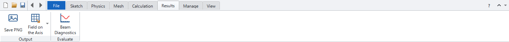
When you open the Results tab, the list of results appears at the upper right, the display settings below it, and the result plot in the center. Click a row in the list to show that result.
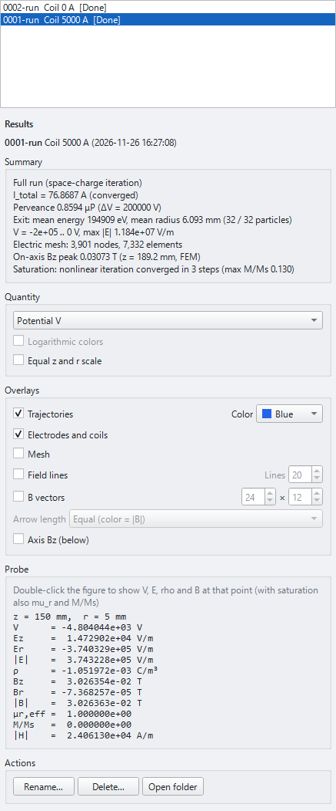
9.1 Displayed quantities
Select the quantity to show as color in "Quantity".
| Quantity | Description |
|---|---|
| Potential V | Distribution of the potential |
| Field magnitude |E| | Strength of the electric field (useful as a guide for discharge) |
| Space charge ρ | Distribution of the beam charge, shown centered on 0: blue (negative, i.e. electrons) to white to red |
| Magnetic Bz / Br / Magnetic |B| | Components and magnitude of the magnetic field (only for results with a magnetic field) |
| Effective relative permeability μr (magnetic) | B / (μ0 H) of the magnetic material. It falls below the initial relative permeability when saturated (only for results with a saturable material; values per element) |
| Saturation M/Ms (saturable magnetic) | 0 (not saturated) to 1 (fully saturated). Shows where the material is saturated (same condition; see Section 6.6) |
| None | Only the geometry and the overlays |
- Logarithmic colors: small values are colored too. For ρ, the thin regions outside the beam and downstream become visible.
- Equal z and r scale: when this is turned off, the plot is stretched to fill the view. This is useful for long, thin geometries. The figure below shows the same result as the figure in Section 4.7, displayed without the equal scale.
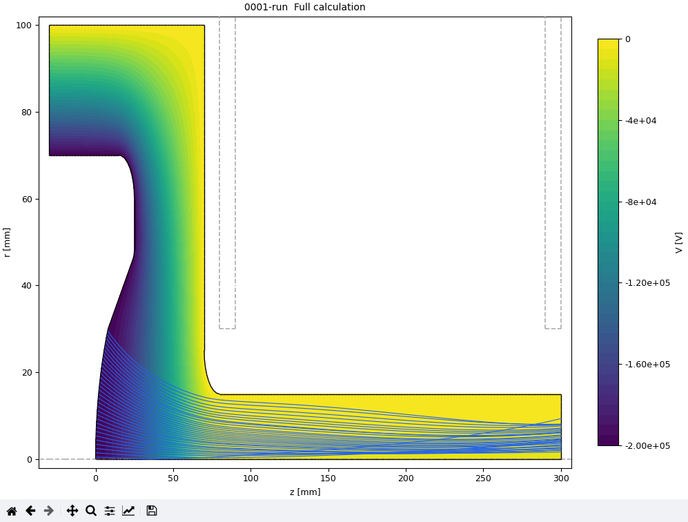
Space charge ρ (logarithmic colors, trajectories in black):
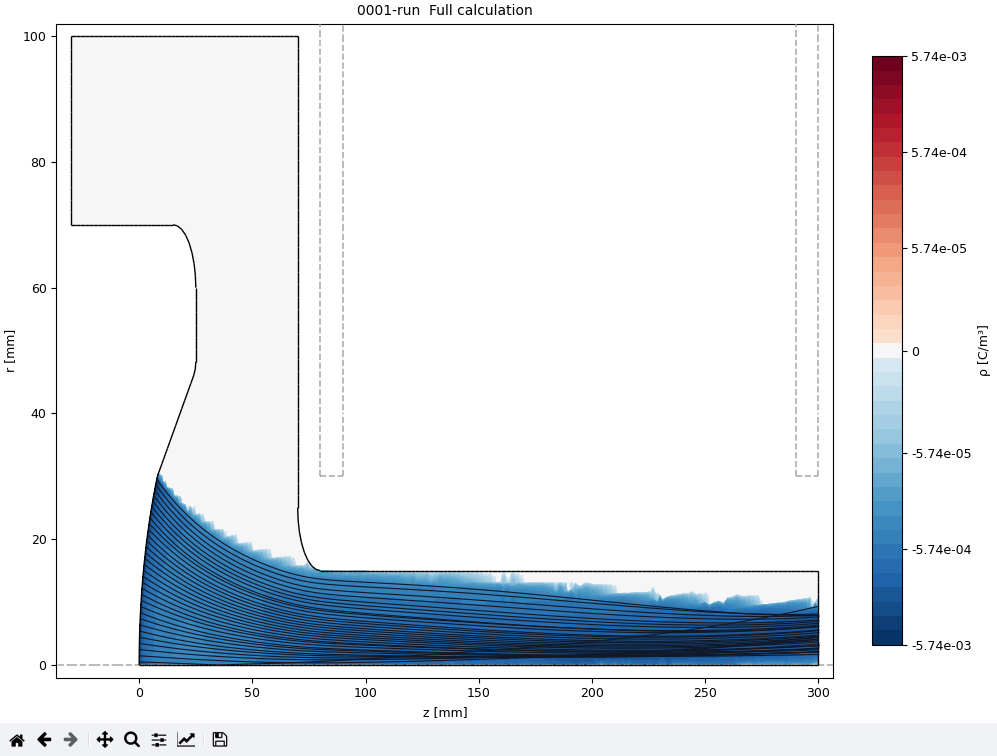
Magnetic field magnitude |B| with the field lines and the axis Bz (lower panel) overlaid:
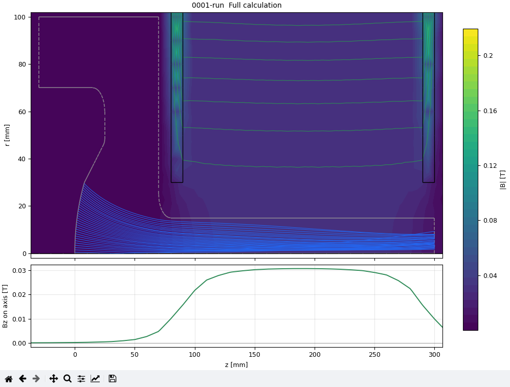
Electric field magnitude |E| with the mesh overlaid:
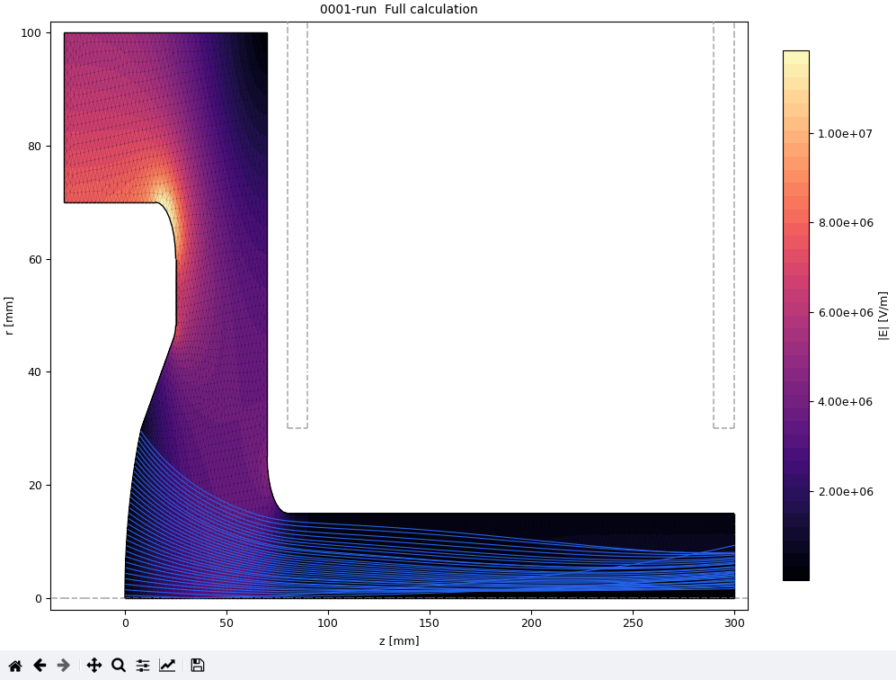
9.2 Overlays
| Item | Description |
|---|---|
| Trajectories | Electron trajectories. The "Color" can be blue, red, green, purple, black, white, or per particle (black or red is easier to see on the ρ plot) |
| Electrodes and coils | Outlines of the electrodes and coils |
| Mesh | The mesh used for the calculation |
| Field lines | Magnetic field lines (the same magnetic flux passes between adjacent lines, which are equally spaced). The number of lines can be changed (FEM magnetic field only) |
| B vectors | Shows the direction of the magnetic field with arrows on a grid. You can choose the grid density and how the arrow length is set |
| Axis Bz (below) | Shows Bz(z) on the symmetry axis as a separate graph below the plot |
9.3 Zooming and panning
The toolbar below the plot provides zoom (magnifier) and pan (cross arrow). After zooming, switching the quantity or the overlays keeps the same display range. Click the house icon (or "Fit" on the View tab, or press the F key) to return to the full view.
9.4 Probe (reading values at a point)
Double-click the plot. A red + mark is placed at that point, and the values of V, Ez, Er, |E|, ρ, Bz, Br and |B| at that point are shown in "Probe" in the panel on the right (they are also shown in the status bar). For results with a saturable magnetic material, the effective relative permeability μr,eff, the saturation M/Ms and |H| [A/m] at points inside the magnetic region are shown too. Outside the domain, the panel shows "(outside the domain)".
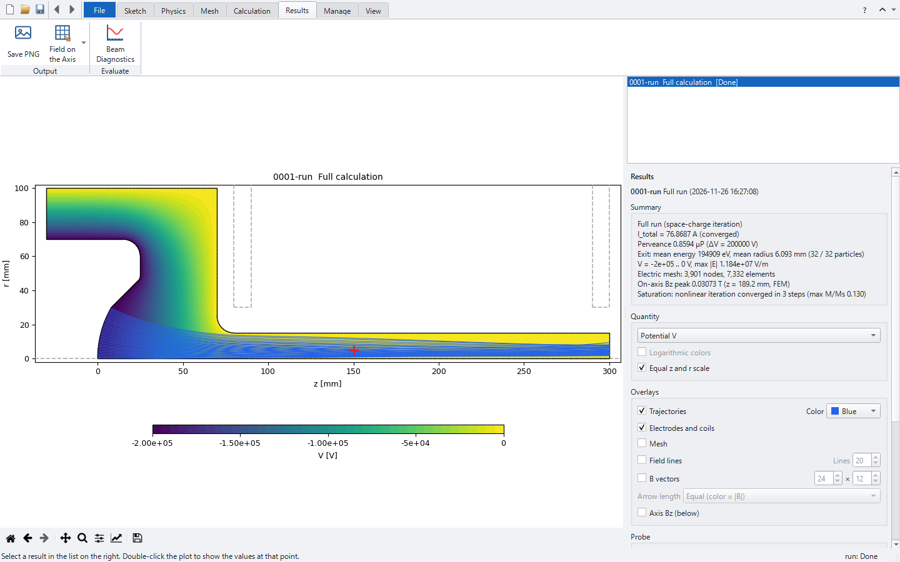
9.5 Exporting plots and fields
In the "Output" group of the ribbon, you can export the plot and the field values.
| Button | Description |
|---|---|
| Save PNG | Saves the plot on the screen as an image |
| Field on the Axis ▼ | Writes the field values to a numerical file. Use ▼ to choose "Field on the Axis" (r = 0), "Field on a Line" (between two points), or "Field in an Area" (z × r grid) |
In the field export dialog, you set the range (mm), the number of points, the fields to export (V, Ez, Er, |E|, ρ, Bz, Br, |B|) and the format (TXT / HDF5). The default output folder is exports\ in the data folder. The coordinates in the file are in SI units (m).
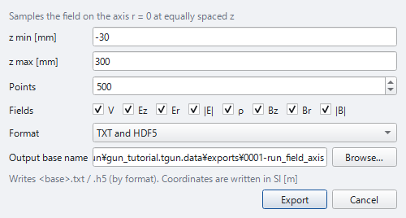
9.6 Beam diagnostics
Click "Beam diagnostics" on the ribbon to open a window that examines the beam properties (only for full-calculation results). Select what to view at the upper left.
| View | Description |
|---|---|
| Envelope | The outer radius r_edge of the beam and the rms radius r_rms at each z |
| Phase space (z cut) | Position r and slope r' of the electrons passing through the "Cut z" plane (the rms emittance is shown in the title) |
| Cathode current density J(r) | Distribution of the emission current density over the cathode surface |
| Summary | Current, perveance, number of particles, and the exit radius and energy |
For each view, "Save PNG..." saves the plot as an image and "Export TXT..." saves the numbers.
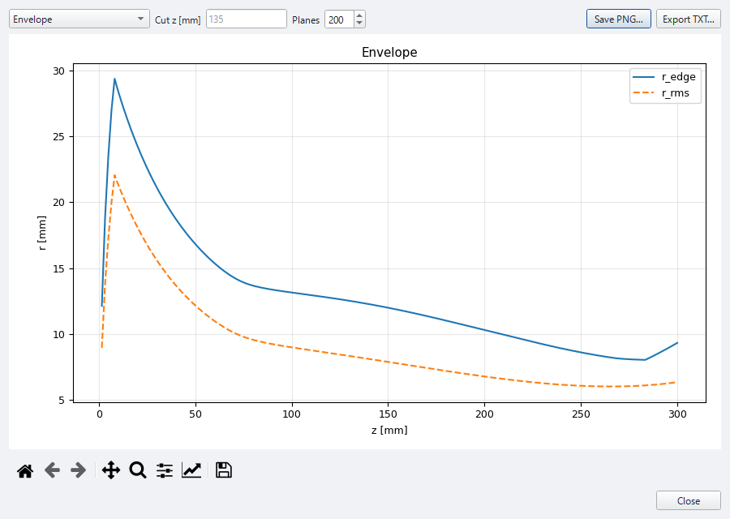
Example of phase space (the z = 500 mm cut of DGUN test3 from Section 10.2):
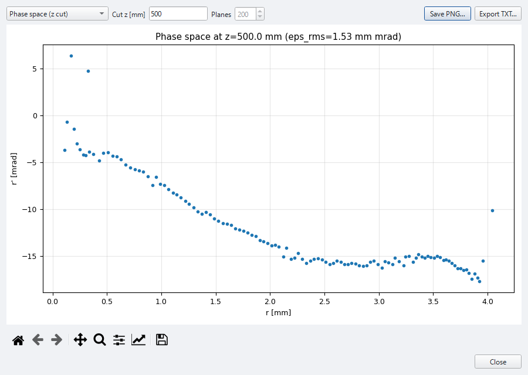
Summary:
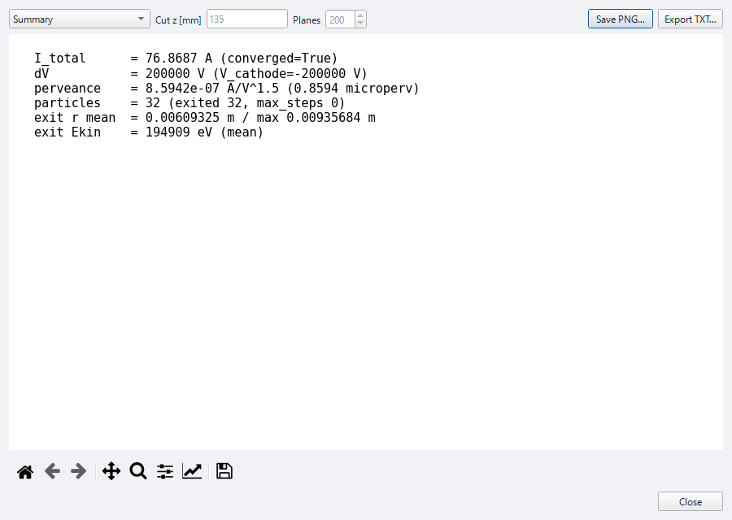
9.7 Managing results
Use "Actions" at the very bottom of the panel on the right to manage the result being shown.
- Rename...: gives the result a readable name (it is shown in the list and as the plot title).
- Delete...: deletes the result folder. This cannot be undone.
- Open folder: opens the result folder (result.h5, log.txt, etc.).
Hover the mouse over a row in the list to show the parameter values used for that result. When you run calculations while changing a parameter, this lets you check which result belongs to which value.
10. Import and export
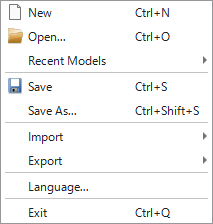
10.1 Importing Version 2 / 1 projects
Choose "File" → "Import" → "TGUN v2 / v1 Project..." to create a new model from a Version 2 / 1 project (.tgunproj).
- Imported items: electric and magnetic geometry, constraints and dimensions, parameters (including Version 1 variables), region kinds and values, electrodes, boundary conditions, mesh settings, calculation settings, the magnetic field source and any imported field map.
- Not imported: the mesh and the calculation results (calculate again).
- The units of parameters are chosen from how they are used (mm if used for a dimension, V if used for a voltage).
- Constraints are imported after checking that adding them does not move the shape. Constraints that would change the shape when imported are removed, and you are told about it.
- When the import finishes, the number of imported items and the notices are shown ("Show details", which is also written to the log).
The imported model is not saved yet. Choose where to save it with "Save as...". The original project is not changed.
10.2 Importing DGUN input
You can create a new model from the DGUN input files (geom.cod, dginput.dat and mag.dat).
- Choose "File" → "Import" → "DGUN Input...".
- Choose the file with "Browse..." next to "geom.cod".
dginput.datandmag.datin the same folder, the save location, and the mesh size (the grid spacing of DGUN) are filled in automatically. Below, the title, grid, potentials, emission surface and the treatment of the magnetic field are shown. - If needed, turn on "Refine" under "Near cathode" to improve accuracy (for example, 0.15 mm).
- Press "Import". A new model is created, saved to the save location and opened.
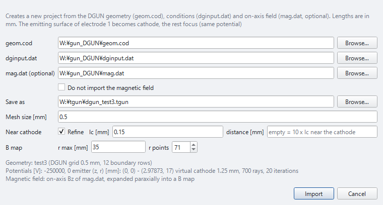
| Field | Description |
|---|---|
| geom.cod / dginput.dat | DGUN geometry and calculation conditions (required) |
| mag.dat (optional) | On-axis magnetic field. The on-axis Bz is expanded into a 2-D magnetic field map by a second-order paraxial expansion |
| Do not import the magnetic field | Imported without a magnetic field |
| Save as | The file of the model to create (a name that already exists cannot be used) |
| Mesh size / Near cathode | Mesh settings (lengths in mm) |
| B map | The range (maximum r) and number of points of the magnetic field map |
On import, the emission surface of DGUN electrode 1 becomes cathode, the rest of electrode 1 becomes focus (same potential), and the second electrode becomes anode (the third and later electrodes are elec3 ...). The magnetic field becomes "Import (field map file)" (the field map placed in the inputs\ folder of the data folder), and the relaxation factor α is set to the guide value for the mesh.
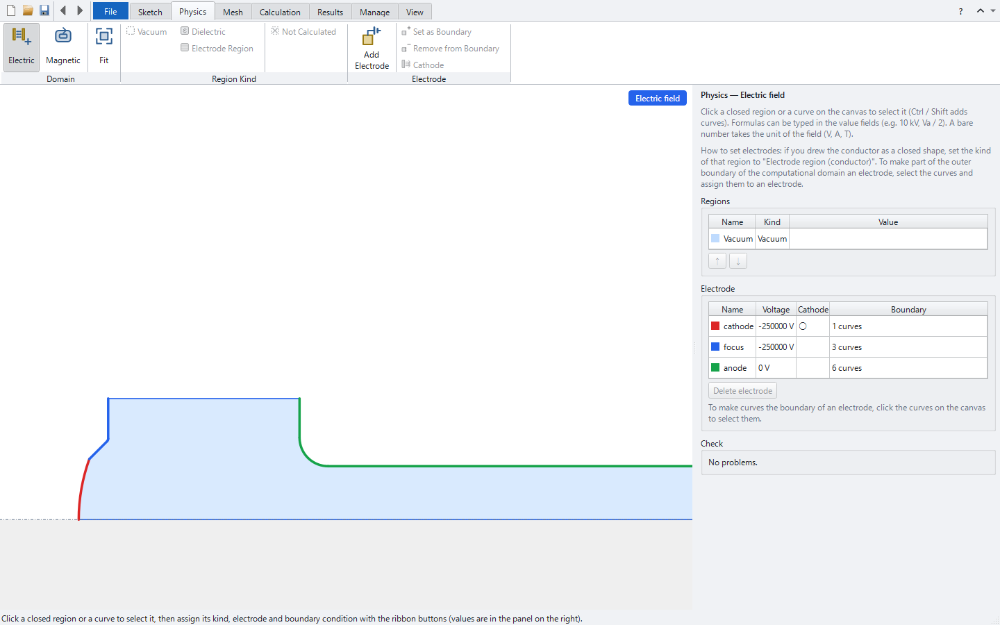
You can run the full calculation as it is. (Refining near the cathode makes α smaller, so it takes about 150 to 200 iterations.) The figure below shows the result of the DGUN test3 calculation (space-charge density ρ, log scale). The beam current was 55.703 A (DGUN: 55.30 A; difference +0.7%; converged in 176 iterations).
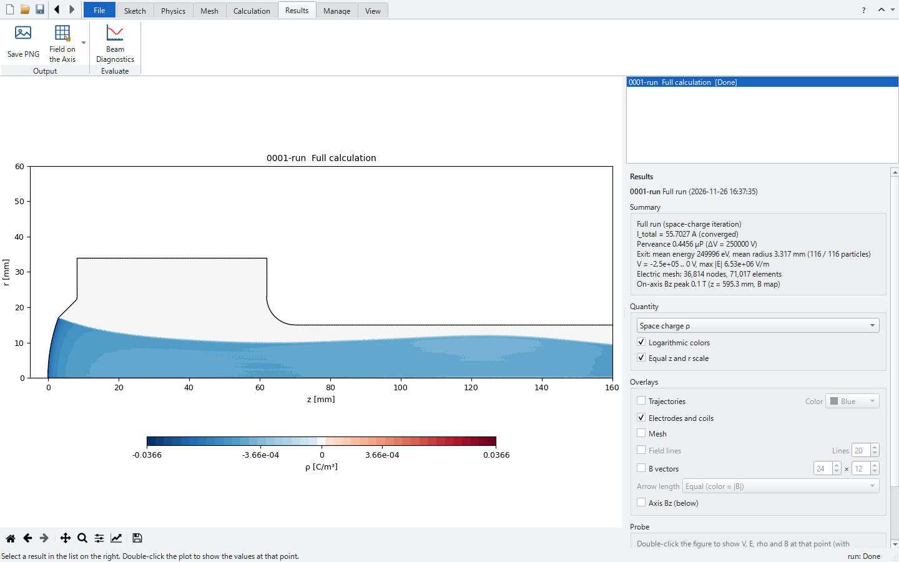
Tip: To compare with the DGUN output, use
examples\dgun_test3\compare_beam.py --result <path of result.h5>. You can compare the beam current, equipotential lines, surface field, envelope and cross section with the DGUN output (seeexamples\dgun_test3\README.mdfor details).
10.3 Importing a magnetic field map
You can use external magnetic field data as a magnetic field. In the Physics tab, set "Domain" to "Magnetic Field", and press "Import Field Map" on the ribbon. The imported file is saved in the data folder, so save the model first.
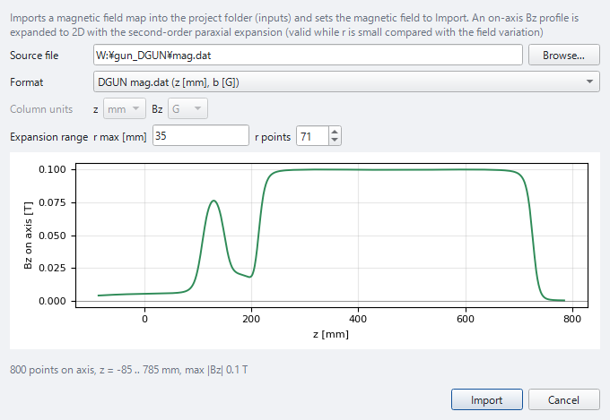
| Format | Description |
|---|---|
| TGUN B map or result (h5 /bmap) | A TGUN magnetic field map, or a "Magnetic Only" result from another model |
| 4-column text (z r Bz Br, SI) | Magnetic field on a grid |
| 2-column on-axis Bz text (z Bz) | On-axis magnetic field. Choose the unit of the columns. It is expanded to 2-D by a second-order paraxial expansion |
| DGUN mag.dat | On-axis magnetic field of DGUN (z [mm], b [G]) |
When you choose the source file, the format is selected automatically and a graph of the on-axis Bz appears. When you make the map from an on-axis magnetic field, set the "Expansion range" (maximum r and number of points). It is valid only in a range where r is sufficiently smaller than the length over which the magnetic field changes.
When you press "Import", the field map is saved in the inputs\ folder of the data folder, and the field source becomes "Import (field map file)".
10.4 Exporting to EMRM-CAD
Choose "File" → "Export" → "EMRM-CAD Document (.mcad)..." to export the geometry as a file that can be opened in the 3D CAD program EMRM-CAD (used when making a 3D model of a revolved body or drawings).
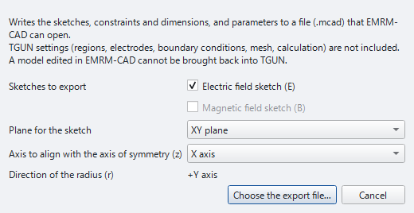
- What is exported is the sketch, the constraints and dimensions, and the parameters. TGUN settings (regions, electrodes, boundary conditions, mesh and calculation) are not included.
- You can choose the plane on which the sketch is placed (XY, XZ or YZ) and the axis to align with the axis of symmetry (z).
- A file edited in EMRM-CAD cannot be brought back into TGUN. TGUN models are
.tgunfiles, which are separate from EMRM-CAD documents.
10.5 Exporting input for the CLI
Choose "File" → "Export" → "Input for the CLI (.tgunproj)..." to export the current model in a format that the tgun command on the command line can calculate (Appendix B). When the input for a full calculation cannot be made (for example, the magnetic field source is not specified), the part that can be made (electric field only, or magnetic field only) is written, and you are told about it.
The same can be done without opening the GUI, with the tgun convert command. This command can also create input with changed parameters (Appendix B.3).
11. Saving and folder structure
A TGUN model consists of two items that make one set: the model file and a data folder with the same name.
gun_tutorial.tgun Model file (geometry, parameters, physics, settings). Open this file
gun_tutorial.tgun.data\ Data folder
command.log Record of calculation and export commands
mesh\e\<date-time>\, mesh\b\<date-time>\ Meshes made in the Mesh tab
results\0001-run\ Results of one calculation (all are kept as history)
result.h5 Results (fields, trajectories, etc.)
log.txt Calculation log
model.tgunproj Input used for this calculation (CLI format)
result.json Result name, status, summary and the parameters used for the calculation
exports\ Default location for exported files (field values, PNG, etc.)
inputs\ Imported magnetic field maps, etc.
- Auto-save: The model is saved automatically before the mesh is generated and before the calculation runs. A result and the geometry and settings used to calculate it are always paired.
- Save as: Saving under a new name copies the data folder (meshes and results) along with the model.
- Moving a model: Move
.tgunand.tgun.datatogether. An imported magnetic field map is referenced from inside the data folder, so moving the model does not break it. - Recent files: "File" → "Recent files" lists the models you opened or saved, newest first.
- While a model is open, a
name.tgun.lockfile is created next to it. This is a mark that stops the same model from being opened in two places. It is deleted when the model is closed. - Only one model can be open at a time. While a calculation is running, you cannot open or create another model.
- It also works inside OneDrive.
12. Troubleshooting
A closed region is not filled
The outline is not closed. Check for places where the end points of lines are apart (end points that are not connected are shown as large orange dots). Drag one point onto another point to overlap them, or select two points and add a "Coincident" constraint.
The Run button is disabled, or "The calculation cannot be started" appears
The physics settings are incomplete. Check the details with "Check" at the bottom of the panel on the right of the Physics tab. Common causes are:
- No cathode ("Exactly one electrode with is_cathode=True is required"): In the electrode table, select the electrode to be the cathode, and press "Cathode" on the ribbon.
- No electrode, or an electrode has no boundary: Select a curve, then press "Add Electrode" or "Set as Boundary".
- The field source is "FEM (solve the magnetic sketch)" but there is no magnetic geometry: If you do not use the magnetic field, set "Field source" to "None".
"The assigned closed region was not found" appears
The shape was changed a lot after the kinds were assigned, so the closed region can no longer be identified. In the Physics tab, select that closed region again and assign its kind again, or delete the "not found" row in the table. "The closed region was found again by a representative point" is a warning. Check the colors in the figure to confirm that the assignment is what you intended.
A unit error appears in a value field
A parameter without a unit is written in a field such as voltage or current. Either add a unit to the parameter (Va = 10 kV), or write the value in the field as Vn * 1 V (Section 5.5).
The calculation does not converge ("not converged")
Try making the relaxation factor α smaller ("Use guide"), or increasing the maximum number of iterations (default 300). If the calculation starts to diverge, α is reduced automatically (the log shows "divergence tendency detected", and a dashed vertical line appears in the convergence graph). When the mesh is made finer, make α smaller too. The "Unmet criteria" line in the log shows the last remaining quantities (dI, dJ and the space-charge residual).
Improving the accuracy of the beam current
The "Size near the cathode" setting in the Mesh tab is effective. Accuracy improves with far fewer elements than refining the whole mesh. After refining, set α to the guide value.
"The nonlinear magnetic calculation did not converge in N iterations" appears
This is a warning that the magnetic field calculation with a saturable magnetic material did not converge within the iteration limit. The calculation continues with the last solution, but the magnetic field contains errors. Check that Js and χ0 are not extreme values, and that the magnetic mesh is not too coarse.
Accuracy of the magnetic field with magnetic materials
Near magnetic materials, errors from a coarse mesh have a large effect. Make the magnetic mesh size smaller and calculate again, then check that the on-axis Bz and other values do not change (see the note in Section 6.6).
Stopping a calculation in the middle
Use "Stop" (stops at the next iteration boundary) or "Force stop" in the Calculation tab. Neither of them saves the result.
Cannot delete a result
A result cannot be deleted while its file (result.h5) is open in another program (an HDF viewer, Python, etc.). Close the file, then delete the result again.
Cannot open a model ("Already open elsewhere" appears)
The same model is open in another TGUN window. Close it there. If the message appears although the model is not open anywhere (for example, after an abnormal exit), delete the name.tgun.lock file in the same folder as the model, then open the model.
Lines in the Sketch tab do not move, or points cannot be selected
In the Physics, Mesh and Calculation tabs, the geometry cannot be moved (you can only select it). Go back to the Sketch tab. In the Sketch tab, only the geometry of the current "Domain" (electric / magnetic) can be edited. The gray dashed lines show the geometry of the other domain.
Undoing a mistake
With "Undo" (Ctrl+Z), you can undo changes to the geometry, parameters, physics, and the mesh and calculation settings, one at a time. "Redo" is Ctrl+Y.
13. Keyboard and mouse reference
File and general
| Key | Action |
|---|---|
| Ctrl+N | New |
| Ctrl+O | Open |
| Ctrl+S / Ctrl+Shift+S | Save / Save as |
| Ctrl+Z / Ctrl+Y | Undo / Redo |
| F | Fit |
| F1 | Manual |
| Ctrl+F1 | Minimize the ribbon |
| F11 | Full screen |
| Ctrl+Q | Quit |
Sketch (central canvas)
| Operation | Description |
|---|---|
| L / D / T | Line / Dimension / Trim |
| Tab / Enter (input box) | Next field / Confirm |
| Enter or double-click | End a chain of lines |
| Esc | Discard the drawing in progress, then exit the tool |
| Delete | Delete the selected items |
| Click / Ctrl+click / Shift+click | Select / toggle / add to the selection |
| Drag from empty space | Box select (left to right: elements fully inside; right to left: elements touched) |
| Drag (point or curve) | Move while keeping the constraints |
| Double-click (dimension value) | Change the dimension value (expression) |
| Ctrl+click (while drawing) | Do not add automatic constraints for that click |
| Mouse wheel / middle-button drag | Zoom in and out / pan the view |
Physics (central canvas)
| Operation | Description |
|---|---|
| Click | Select a closed region or a curve |
| Ctrl+click / Shift+click | Add a curve to the selection |
Result plots
| Operation | Description |
|---|---|
| Double-click | Probe (show the value at that point) |
| Toolbar below the plot | Zoom, pan, home (fit all), save the plot |
Appendix A Glossary
| Term | Meaning |
|---|---|
| Axial symmetry | Shape rotated around the z axis. Only the half-plane r ≥ 0 is calculated |
| Domain (electric / magnetic) | The target of each calculation: the electric geometry (electrodes, vacuum) and the magnetic geometry (coils, magnetic materials, air) |
| Model | A TGUN file (name.tgun). It contains the geometry, parameters, physics and settings |
| Sketch | A drawing of the geometry. There are two, one for the electric field and one for the magnetic field |
| Closed region | A region enclosed by lines. The unit to which a kind is assigned |
| Computational domain | The range in which the mesh is made and the field is solved (closed regions of vacuum, dielectric, air, coils and magnetic material) |
| Constraint / Dimension | Relations between shapes (horizontal, coincident, ...) / values such as length and angle. They determine the shape |
| Parameter | A named value. It can be used in expressions for dimensions, voltages, etc. |
| Boundary condition | A condition given to the curves at the edge of the computational domain: electrode (fixed voltage), natural boundary, A = 0, etc. |
| Cathode | The electrode that emits electrons. There is exactly one in a model |
| Electrode region | A conductor body. It is not meshed, and its outline is at the electrode potential |
| A = 0 | The magnetic field boundary condition A_θ = 0. Magnetic flux does not cross the line |
| Total current [A·turn] | Number of turns of the coil × current |
| Magnetic material / Saturable material | A material that is magnetized and strengthens the field (e.g. iron). It is treated with a constant relative permeability μr, or with saturation taken into account |
| Saturation magnetization Js | The upper limit that the magnetization approaches in a strong field (μ0Ms [T]). About 2.15 T for pure iron |
| Initial susceptibility χ0 | How easily the material is magnetized in a weak field. The initial relative permeability is 1 + χ0 |
| Saturation ratio M/Ms | The ratio of the magnetization M to the saturation magnetization. From 0 to 1 |
| Effective relative permeability μr,eff | B / (μ0 H) including saturation. It decreases when saturated |
| Mesh | The triangles that divide the computational domain |
| Space charge ρ | The charge distribution made by the beam electrons. It weakens the electric field and limits the current |
| Iteration and relaxation factor α | The procedure that recalculates the space charge and the trajectories alternately to balance them / the rate of update at each step |
| Convergence | The state in which the current and other quantities no longer change with iteration |
| Perveance | I / V^1.5 (µP = 10⁻⁶ A/V^1.5). A quantity that expresses the performance of an electron gun |
| Envelope | The outer radius of the beam at each z |
| Emittance | The spread of the beam in phase space (r and r'). An index of beam quality |
| Magnetic field map | Values of the magnetic field (Bz, Br) on a grid. Used for tracking |
Appendix B Command line (CLI)
TGUN calculations can also be run from the command line without opening the GUI. The GUI also runs the same calculation in a separate process internally, so the results are the same. Use the command line in cases such as these:
- Repeating the same calculation many times while changing parameters such as voltage, dimensions or coil current (a parameter sweep)
- Calling the calculation from other programs, such as Python or PowerShell scripts
- Extracting result values, such as the field on the axis or the beam envelope, as text
- Reproducing a calculation made in the GUI later, as it is
B.1 Command names and basics
| Environment | Command | Example |
|---|---|---|
| Distributed version | TGUN.exe |
TGUN.exe run -p gun.tgunproj |
Development environment (after pip install -e) |
tgun or python -m tgun |
tgun run -p gun.tgunproj |
In this appendix, tgun is used. In the distributed version, read it as TGUN.exe (move to the TGUN folder in Command Prompt or PowerShell, or write the full path of TGUN.exe).
- Run without any arguments to open the GUI.
tgun name.tgunopens that model in the GUI. tgun -hshows the list of commands, andtgun <command> -hshows the arguments of that command.-p,-iand-ocan also be written as--project(input),--input(result) and--output(output).- Length arguments are always in SI units (m) for every command (not mm as in the GUI). The only exception is the DGUN import (mm).
Try it first (make the input from the example model and calculate; about 15 seconds):
tgun convert examples\gun_with_solenoid\gun_with_solenoid.tgun -o work\gun.tgunproj
tgun run -p work\gun.tgunproj -o work\gun.h5
tgun beam -i work\gun.h5 --what summary
The calculation converges in 29 iterations, and the last line is I_total = 7.686871e+01 A (converged) (the same value as in the GUI tutorial).
List of commands:
| Command | Purpose | Input | Output |
|---|---|---|---|
params |
List the parameters of a model | .tgun |
Screen |
convert |
Make the input for the CLI from a model | .tgun |
.tgunproj |
run |
Full calculation (magnetic field, then convergence of the space charge) | .tgunproj |
.h5 |
solve-e |
Electric field only (no space charge) | .tgunproj |
.h5 |
solve-b |
Magnetic field only | .tgunproj |
.h5 |
mesh |
Make only the mesh | .tgunproj |
.msh |
info |
List the contents of a result file | .h5 |
Screen |
plot |
Plot of the results | .h5 |
.png |
export |
Export field values (on the axis, on a line, in an area) | .h5 |
.txt, .h5 |
beam |
Beam diagnostics (summary, envelope, cut) | .h5 |
Screen, .txt, .png |
import-dgun |
Convert a DGUN input to the input for the CLI | geom.cod and others |
.tgunproj |
import-b |
Convert a magnetic field map (text) to .h5 |
Text | .h5 |
version |
Show the version and configuration | — | Screen |
selftest |
Run a small calculation to check that it works | — | Screen |
B.2 Two kinds of files: model file (.tgun) and input for the CLI (.tgunproj)
Model name.tgun |
Input for the CLI name.tgunproj |
|
|---|---|---|
| Made / read by | GUI | Calculation commands (run, solve-e, solve-b, mesh) |
| Contents | Sketch, constraints and dimensions, parameters and expressions, physics settings, and settings | Only what the calculation needs (point coordinates, boundary names, region values, electrode voltages, and settings) |
| Parameters | Kept as expressions | Evaluated numbers (no expressions) |
| Format | TGUN model format | JSON (text; can be read in a text editor) |
The calculation commands read .tgunproj. There are four ways to get a .tgunproj file.
- Make it from a model with
tgun convert(Section B.3). You can make it without opening the GUI, and you can also change parameters. - Make it in the GUI with
"File" > "Export" > "Input for the CLI (.tgunproj)..."(Section 10.5). model.tgunprojin the folder of a result calculated in the GUI (the input used for that calculation itself; Section B.7).- Make it from a DGUN input with
tgun import-dgun(Section B.6).
Note: To load a
.tgunprojinto the GUI, use "Import" instead of "Open" (Section 10.1). A.tgunprojhas no expressions or parameters, so the imported model keeps only the coordinates. Keep the source for changing the shape and values in the model file (.tgun).
B.3 Creating input from a model: params and convert
Viewing the parameters
tgun params gun.tgun
gap = 10.0 mm -> 10.00 mm
R = 5.0 mm -> 5.00 mm
Va = 10 kV -> 10000.00 V
From left to right: the name, the written expression, and the evaluated value.
Making the input
tgun convert gun.tgun -o work\gun.tgunproj
Wrote work\gun.tgunproj (Full calculation input)
Run: tgun run -p "work\gun.tgunproj" -o result.h5
| Argument | Meaning |
|---|---|
model |
Model (name.tgun) |
-o output |
Output file. If omitted, name_cli.tgunproj next to the model. Folders are created if they do not exist |
--set name=expression |
Makes the input after changing parameters (can be repeated) |
--scope |
Input to make: run = full calculation, e = electric field only, b = magnetic field only, auto = whatever can be made (default) |
- The model is not changed.
--setaffects only the.tgunprojthat is made. - You can run it while the model is open in the GUI. It reads the last saved content.
--scope automakes whatever can be made, in the order full calculation, then electric field only, then magnetic field only (a model without an electric geometry can still give a magnetic field only input). The screen shows which inputs were made and which command to use with each.- For a model that uses an imported magnetic field map, the full path of the map file (inside the data folder of the model) is written in the input.
Changing parameters (--set)
tgun convert gun.tgun -o work\v12.tgunproj --set "Va=12 kV" --set "gap=8 mm"
Parameter: Va = 12 kV (in the model: 10 kV)
Parameter: gap = 8 mm (in the model: 10.0 mm)
Wrote work\v12.tgunproj (Full calculation input)
- Write expressions as in the parameter table of the GUI (Section 5.5). You can write units (
12 kV,8 mm). - If you write only a number, the unit of that parameter is used (
--set gap=8means 8 mm). - Expressions that use other parameters can also be written (
--set "gap=R + 3 mm"). - Enclose an expression that contains spaces in
"(--set "Va=12 kV"). - When a parameter is changed, the sketch shapes whose dimensions use it also change, as when the value is changed in the GUI.
- To check the result before a calculation, use
tgun params gun.tgun --set "gap=R + 3 mm"(the list after the change is printed; the model is not changed).
If you write the name of a parameter that does not exist, if an expression is wrong, or if the changed values cannot make the shape, the reason is shown and the program ends with exit code 1 (no file is written).
B.4 Running calculations: run, solve-e, solve-b and mesh
tgun run -p gun.tgunproj -o gun.h5 # Full calculation (magnetic field, then iteration of electric field and trajectories)
tgun solve-e -p gun_e.tgunproj -o gun_e.h5 # Electric field only (no space charge = Laplace equation)
tgun solve-b -p coil.tgunproj -o coil.h5 # Magnetic field only
tgun mesh -p gun.tgunproj --domain e # Make only the electric field mesh (--domain b for the magnetic field)
| Argument | Command | Meaning |
|---|---|---|
-p input |
All | Input for the CLI (.tgunproj) |
-o output |
All | Output file. If omitted, name_result.h5 next to the input (mesh makes name_e.msh and name_b.msh) |
--reuse-mesh |
run, solve-e |
If a mesh made before (name_e.msh and name_b.msh) is next to the input, it is used without being made again |
--max-iter count |
run |
Uses this upper limit on the number of iterations instead of the value written in the input |
--alpha value |
run |
Uses this relaxation factor α instead of the value written in the input |
--domain e/b |
mesh |
Domain for which the mesh is made (electric or magnetic) |
Note: If
-ois omitted, the name isname_result.h5forrun,solve-eandsolve-b. Running with the same input again overwrites it, so we recommend naming the output with-o.
If a model file (.tgun) is passed to -p as it is, the program stops with a message to make the input with convert (the calculation commands read only .tgunproj).
Mesh files (name_e.msh, name_b.msh, and their .domain.json files) are also created next to the input. When you change the geometry or the mesh settings, do not use --reuse-mesh (with it, the calculation uses the old mesh).
Screen output of run:
mesh written: gun_b.msh
coil 'coil_0': I = 5000 A, mesh area = 0.009 m^2, J_theta = 555556 A/m^2
magnetic material 'iron_sat_1': Frohlich-Kennelly (Js = 1.9 T, chi0 = 1000)
solving nonlinear magnetostatics (A_theta, Newton)...
...
nonlinear magnetic field solve: converged in 3 iterations (residual 1.67e-14)
B map sampled on 201x101 grid
cathode refine: size = 1 mm, dist = 10 mm
mesh written: gun_e.msh
dt = 2.630e-12 s, electrodes = {'Cathode': -200000.0, 'Wehnelt': -200000.0, 'Anode': 0.0}, cathode = 'Cathode'
[iter] k=1 I_total=1.555862e+02 dI=inf dJ=inf drho=1.000e+00 res=1.000e+00
[iter] k=2 I_total=1.612142e+02 dI=8.293e-02 dJ=1.898e-01 drho=6.280e-01 res=8.483e-01
...
[iter] k=29 I_total=7.686871e+01 dI=5.137e-05 dJ=6.014e-05 drho=2.716e-04 res=6.791e-04
[iter] converged at k=29
result written: gun.h5
I_total = 7.686871e+01 A (converged)
The [iter] lines give the values for each iteration. They are the same as in the convergence graph of the GUI (Section 8.2). k is the iteration number, I_total is the emitted current [A], dI and dJ are the relative changes of the current and of the current density from the previous iteration, drho is the change of the space charge, and res is the residual of the space charge. The last line is the result. (converged) means converged; (NOT converged) means the calculation was stopped at the upper limit of the iterations.
Exit codes (used to judge the result in a script):
| Exit code | Meaning |
|---|---|
| 0 | Finished normally (run converged) |
| 1 | Error (input validation error, missing file, etc.). The reason is shown |
| 2 | Invalid arguments |
| 3 | run did not converge (the result file is still written; it can be viewed as an intermediate state) |
| 4 | The trial period has ended (distributed version) |
The calculation settings (α, tolerances, the upper limit of iterations, the time step of the trajectories, and so on) are written in the input. The calculation settings of the model (Section 8.3) are carried over as they are by convert. To change settings other than --max-iter and --alpha, change the settings of the model on the "Calculation" tab in the GUI, save it, and run convert again.
B.5 Viewing results: info, plot, export and beam
Every command takes the result file (.h5) with -i. You can use it not only for results calculated on the command line, but also for results calculated in the GUI (for example results\0001-run\result.h5 in the data folder of the model; Chapter 11).
info - list of contents
tgun info -i gun.h5
The names and sizes of the data in the result file are printed. The main items are listed below (all values are in SI units).
| Group | Contents |
|---|---|
/emesh and /bmesh |
Electric and magnetic meshes (node coordinates, triangles, boundaries and regions) |
/electrostatics |
Node potential V, electric field E_nodal, space charge rho_nodal |
/magnetostatics |
Node vector potential A_theta, flux density B_nodal (if there are saturable materials, also the effective μr and saturation ratio of each element) |
/bmap |
Magnetic field map used for the trajectory calculation (z, r, Bz, Br) |
/emission |
Current density J and current I for each cathode surface |
/particles |
Trajectories (positions and momenta), current of each particle, destination |
/convergence |
I_total, dI_rel, dJ_rel, drho_rel, alpha and rho_res at each iteration |
/parameters |
Attributes: converged current I_total, whether it converged (converged), and the input used for the calculation (project_json) |
plot - figures
tgun plot -i gun.h5 --what traj -o traj.png
--what |
Figure |
|---|---|
V |
Potential (equipotential lines) |
E |
Magnitude of the electric field |
rho |
Space-charge density |
traj |
Trajectories |
J |
Distribution of the cathode current density |
conv |
Convergence history |
B |
Magnitude of the flux density, field lines, arrows, and Bz on the axis |
If -o is omitted, the figure is written next to the result as name_<what>.png. The resolution can be changed with --dpi (default 150).
With --what B, you can use --b-levels n (number of field lines; default 20, 0 = do not draw), --b-vectors NZ,NR (grid of arrows; default 24,12, 0 = do not draw), and --b-vec-scale unit/mag (all arrows the same length / length proportional to the magnitude).
export - field values
tgun export -i gun.h5 -o axis --shape axis --fields V,Ez,Bz --format txt
tgun export -i gun.h5 -o line --shape line --p1 0.0,0.001 --p2 0.04,0.001 --npts 200
tgun export -i gun.h5 -o area --shape area --z-range 0,0.04 --r-range 0,0.005 --nz 200 --nr 50
| Argument | Meaning |
|---|---|
-o name |
Name of the output (no extension is added; name.txt and name.h5 are created) |
--shape |
axis = on the axis (default), line = on the line joining two points, area = grid over a rectangular range |
--fields |
Quantities to write. Select from V,Ez,Er,Emag,rho,Bz,Br,Bmag, separated by commas (if omitted, everything in the result) |
--z-range zmin,zmax |
Range of z [m] (axis and area; whole range if omitted) |
--r-range rmin,rmax |
Range of r [m] (area) |
--p1 z,r and --p2 z,r |
Start and end points of the line [m] (line) |
--npts |
Number of points (axis and line; default 500) |
--nz and --nr |
Number of grid divisions (area; default 200 and 100) |
--format |
txt, h5, or both (default) |
Text output (--shape axis):
# TGUN field export (shape=axis, SI units)
# source_file = gun.h5
# fields = V Ez Bz
# units = SI (z,r[m] V[V] E[V/m] rho[C/m^3] B[T])
# Columns: s distance z r V Ez Bz mask
0.000000000e+00 0.000000000e+00 0.000000000e+00 0.000000000e+00 0.000000e+00 -3.514372e+05 2.779186e-03 1
2.500000000e-01 1.000000000e-02 1.000000000e-02 0.000000000e+00 8.982020e+03 -6.582072e+05 9.952325e-03 1
Lines beginning with # are comments, and the Columns: line gives the column names. s is the position along the line (0 to 1), distance is the distance from the start point [m], and mask is 1 if the point is inside the electric computational domain, or 0 if it is outside (for example, inside an electrode).
beam - beam diagnostics
tgun beam -i gun.h5 --what summary
tgun beam -i gun.h5 --what envelope --z-planes 0.011,0.04,100 -o envelope.txt --plot envelope.png
tgun beam -i gun.h5 --what cut --cut 0.03 -o cut.txt --plot phase.png
--what |
Output | Argument |
|---|---|---|
summary |
Shows the summary on the screen (also written to a file with -o) |
- |
envelope |
Beam radius at each z plane | --z-planes zmin,zmax,number [m] (number of planes; if omitted, 200 planes over the whole range) |
cut |
List of particles crossing one z plane (phase space) | --cut z [m] (required) |
If -o is omitted, the output is written next to the result as name_envelope.txt or name_cut.txt. With --plot, a figure (.png) is also created.
Output of summary:
I_total = 76.8687 A (converged=True)
dV = 200000 V (V_cathode=-200000 V)
perveance = 8.5942e-07 A/V^1.5 (0.8594 microperv)
particles = 32 (exited 32, max_steps 0)
exit r mean = 0.00609325 m / max 0.00935684 m
exit Ekin = 194909 eV (mean)
The columns of envelope are z, r_edge (radius of the outermost particle), r_rms (rms radius weighted by current), I_pass (current passing the plane [A]), and n_rays (number of particles passing). The columns of cut are pid (particle number), r, rp (slope dr/dz), I (current of the particle [A]) and ekin_eV (kinetic energy [eV]), and the rms emittance is also printed on the screen. The values are the same as in "Beam Diagnostics" in the GUI (Section 9.6).
B.6 Import: import-dgun and import-b
Creating input for the CLI from DGUN input
tgun import-dgun --geom geom.cod --dginput dginput.dat --mag mag.dat -o test3.tgunproj --cathode-mesh-size 0.25
| Argument | Meaning |
|---|---|
--geom and --dginput |
DGUN geometry (geom.cod) and input (dginput.dat). Required |
--mag |
Field on the axis (mag.dat). If omitted, the field in dginput.dat is used |
--no-b |
Do not import the magnetic field |
-o |
Output (.tgunproj). Required |
--mesh-size |
Mesh size [mm] (default 1.0) |
--cathode-mesh-size |
Mesh size near the cathode [mm] (if omitted, the mesh is not refined) |
--refine-dist |
Distance over which the mesh is refined [mm] (if omitted, 10 times the size near the cathode) |
--rmax and --nr |
Upper limit of r of the field map [mm] (default 35) and number of divisions (default 71) |
The .tgunproj file created can be calculated as it is with tgun run -p. To see the geometry and settings in the GUI, use "File" > "Import" > "DGUN Input..." in the GUI (Section 10.2). It performs the same conversion and saves the result as a model.
Converting a field map to .h5
tgun import-b --file bmap.txt -o bmap.h5
Converts a text field map to the TGUN field map format (.h5). The GUI's "Import Field Map" (Section 10.3) does the same conversion and registers the map in the model.
B.7 Reproducing the GUI calculation
When you calculate in the GUI, the input model.tgunproj used for that calculation is placed in the result folder (for example results\0001-run\ in the data folder of the model). The same calculation command (for example tgun run -p model.tgunproj -o result.h5) is recorded in command.log in the data folder. Running that command in the result folder reproduces the same calculation (use a different name for -o so that the earlier result is not overwritten).
cd gun.tgun.data\results\0001-run
tgun run -p model.tgunproj -o again.h5
model.tgunproj holds the numbers after the parameters were evaluated at that time. Even if you change the model afterwards, the input of the earlier calculation remains. A saturable magnetic material region is written as "b_model": "fk", "fk_js" (Js [T]), and "fk_chi0" (χ0).
B.8 Script example: sweeping parameters
This example changes the anode voltage Va to 8, 10, 12, and 15 kV and lists the emission current for each. The model gun.tgun is not changed.
PowerShell:
foreach ($v in 8, 10, 12, 15) {
tgun convert gun.tgun -o "sweep\v$v.tgunproj" --set "Va=$v kV" | Out-Null
tgun run -p "sweep\v$v.tgunproj" -o "sweep\v$v.h5" | Select-String "I_total = "
}
Select-String "I_total = " extracts only the result line (for example I_total = 1.336526e+00 A (converged)). In the distributed version, replace tgun with the full path of TGUN.exe (for example & "C:\TGUN\TGUN.exe" convert ...).
Python (checks convergence with the exit code and reads the current from the result file):
import subprocess
import h5py # pip install h5py
TGUN = "tgun" # In the distributed version, use r"C:\TGUN\TGUN.exe"
for va in (8, 10, 12, 15):
proj, h5 = f"sweep/v{va}.tgunproj", f"sweep/v{va}.h5"
subprocess.run([TGUN, "convert", "gun.tgun", "-o", proj, "--set", f"Va={va} kV"], check=True)
code = subprocess.run([TGUN, "run", "-p", proj, "-o", h5]).returncode # 0 = converged, 3 = not converged
with h5py.File(h5, "r") as f:
current = f["parameters"].attrs["I_total"]
print(f"Va = {va} kV: I = {current:.4f} A" + ("" if code == 0 else " (not converged)"))
Output for the planar diode model (gap 10 mm, radius 5 mm):
Va = 8 kV: I = 1.3365 A
Va = 10 kV: I = 1.8662 A
Va = 12 kV: I = 2.4533 A
Va = 15 kV: I = 3.4264 A
In a space-charge-limited electron gun, the current is proportional to the voltage to the power 1.5 (constant perveance). The output above agrees well with this: the current ratio of 15 kV to 8 kV, 2.564, matches the 1.5 power of the voltage ratio (2.567).
Tip: To sweep two or more parameters, repeat
--set(--set "Va=12 kV" --set "gap=8 mm"). Coil currents and electrode voltages can be swept in the same way if they are made parameters in the model (write a name such asVaorI_coilin the field; the example gun_with_solenoid is set up this way).
B.9 Script example: matching a target (automatic adjustment of perveance)
You can also change a parameter to match a result to a target value. The script tune_perveance.py in the folder of the example gun_with_solenoid moves the anode position d_an to match the perveance to 1 µP.
cd examples\gun_with_solenoid
python tune_perveance.py
Target 1 uP (tolerance 0.5%). Adjusting d_an (now 70 mm)
d_an = 70.0000 mm -> 0.8594 uP (-14.06%)
d_an = 63.0000 mm -> 1.0342 uP (+3.42%)
d_an = 64.2715 mm -> 0.9960 uP (-0.40%)
Matched: d_an = 64.27 mm
Input for this value (with coil): work\tuned.tgunproj
To apply this to the model, set d_an to 64.27 mm in the parameter table of the GUI
The fit takes three calculations (about 50 seconds). The script repeats the following three commands (it runs with only the Python standard library; the model is not changed).
tgun convert gun_with_solenoid.tgun -o work\case.tgunproj --set "d_an=63 mm" --set "I_coil=0"
tgun run -p work\case.tgunproj -o work\case.h5
tgun beam -i work\case.h5 --what summary
- The script reads the
perveance = ...line in the output oftgun beam --what summaryto get the perveance. - The perveance does not depend on the magnetic field, so during the adjustment the coil is turned off with
--set "I_coil=0", and the magnetic field calculation is skipped. - The next value to try is chosen by the secant method (where the line through the two points crosses the target). The perveance changes roughly as the distance to the power of -2, so drawing the line on a logarithmic scale reaches the target in a few steps.
- Finally, the input
work\tuned.tgunprojis written with the coil turned on at the matched value.
| Argument | Meaning (default) |
|---|---|
--target value |
Target perveance [µP] (default 1.0) |
--param name |
Parameter to move (d_an). Example: --param Rc2 |
--tol value |
Allowed relative difference (0.005 = 0.5%) |
--step value |
Second point = current value × this (default 0.9) |
--max-evals n |
Upper limit on the number of calculations (default 8) |
--tgun command |
The TGUN command. In the distributed version, use --tgun "C:\TGUN\TGUN.exe" |
To use the script with your own model, give the path of the model as the first argument (python tune_perveance.py my_gun.tgun --param gap). To match a different quantity (for example, the beam radius at the exit), rewrite the perveance function in the script so that it reads another line of the output of tgun beam.
B.10 Other commands
tgun version # Version and configuration (Python, libraries, mesh generator)
tgun selftest # Runs a small calculation (mesh and full calculation of the planar diode); normal if "Result: OK" is printed
- If something does not work, please report it with the output of
tgun versionandtgun selftest. tgun job ...is the command that the GUI starts by itself to run calculations (you do not run it by hand).- If a file is missing or an argument value is wrong, the command shows a one-line reason starting with
Error:and exits with code 1. To see the Python traceback for a bug report, run the command with the environment variableTGUN_TRACEBACKset to 1. - After the trial period ends, the distributed
TGUN.execannot run calculations from the command line either (versionand-hstill work).
Appendix C For users moving from Version 2
In Version 3, the way the geometry is drawn has been replaced by the sketch of the 3D CAD EMRM-CAD. The calculation itself (field calculation, emission, tracking, and convergence check) is the same as in Version 2.
What has changed
| Item | Version 2 | Version 3 |
|---|---|---|
| Model | name.tgunproj and name.tgunproj.data\ |
name.tgun and name.tgun.data\ |
| Drawing the geometry | TGUN's own drawing tools | The same sketch as EMRM-CAD (input window, automatic constraints, many drawing and editing tools) |
| Intersecting lines | Curves are split automatically at the intersection | Curves are not split. The regions separated by intersections are found as closed regions (constraints are less likely to be lost) |
| Parameters | Numbers only (no units) | With units (10 mm, 10 kV). Trigonometric functions use degrees |
| Value fields | Numbers or expressions | Numbers, numbers with units, or expressions (a bare number takes the unit of that field) |
| Switching electric / magnetic field | Upper right of the screen | "Domain" at the left end of the ribbon |
| List of results | The browser on the left | Upper right of the Results tab |
| Length unit | Choose from mm, cm, m, inch | mm (in expressions, you can write units such as 1 in or 2 cm) |
| Screen language | Japanese / English | Japanese |
To use a Version 2 project: import it with "File" > "Import" > "TGUN v2 / v1 Project...", and save it as .tgun (Section 10.1). The original project is not changed.
Meshes and calculation results are not carried over, so run the calculation again.
Not yet in Version 3: there is no function yet to open and display result files outside a project (.h5 files calculated with the CLI).